<!doctype html>
<html lang="en">
<head>
  <meta charset="utf-8">
  <meta name="viewport" content="width=device-width, initial-scale=1">
  <title>arxiv digest — 2026-08-29</title>
  <style>
:root {
  --bg: #ffffff;
  --fg: #1f2328;
  --muted: #59636e;
  --border: #d0d7de;
  --card: #f6f8fa;
  --link: #0969da;
}
body {
  max-width: 980px;
  margin: 0 auto;
  padding: 2rem 1rem 5rem;
  font-family: -apple-system, BlinkMacSystemFont, "Segoe UI", Helvetica, Arial, sans-serif;
  line-height: 1.55;
  color: var(--fg);
  background: var(--bg);
}
a { color: var(--link); }
img { max-width: 100%; height: auto; }
pre, code { background: var(--card); border-radius: 6px; }
pre { padding: 1rem; overflow-x: auto; }
blockquote { border-left: 4px solid var(--border); padding-left: 1rem; color: var(--muted); }
details { margin: 0.6rem 0; }
summary { cursor: pointer; font-weight: 600; }
.paper-figures-scroll {
  display: flex;
  gap: 1rem;
  overflow-x: auto;
  overscroll-behavior-x: contain;
  padding: 0.75rem 0.25rem 1rem;
  margin: 1rem 0 1.25rem;
  border-top: 1px solid var(--border);
  border-bottom: 1px solid var(--border);
  scroll-snap-type: x proximity;
}
.paper-figure-card {
  flex: 0 0 min(260px, 72vw);
  scroll-snap-align: start;
  background: var(--card);
  border: 1px solid var(--border);
  border-radius: 12px;
  padding: 0.55rem;
}
.paper-figure-card img {
  display: block;
  width: 100%;
  max-height: 240px;
  object-fit: contain;
  background: white;
  border-radius: 8px;
}
.paper-figure-caption {
  display: block;
  margin-top: 0.5rem;
  color: var(--muted);
  font-size: 0.85rem;
}
.figure-strip-hint {
  color: var(--muted);
  font-size: 0.9rem;
  margin-bottom: -0.3rem;
}
</style>
  <!-- MathJax: renders $...$ inline math and $$...$$ display math, plus
       \(...\) and \[...\]. Loaded from the official CDN; works offline
       once cached. Configured to skip code/pre blocks so arxiv IDs that
       look like dollar amounts don't get mangled. -->
  <script>
    window.MathJax = {
      tex: {
        inlineMath: [['$', '$'], ['\\(', '\\)']],
        displayMath: [['$$', '$$'], ['\\[', '\\]']],
        processEscapes: true,
        processEnvironments: true
      },
      options: {
        skipHtmlTags: ['script', 'noscript', 'style', 'textarea', 'pre', 'code'],
        ignoreHtmlClass: 'tex2jax_ignore',
        processHtmlClass: 'tex2jax_process'
      }
    };
  </script>
  <script id="MathJax-script" async
    src="https://cdn.jsdelivr.net/npm/mathjax@3/es5/tex-chtml.js"></script>
</head>
<body>
<header style="background-color: #333; color: white; padding: 15px; margin-bottom: 20px;">
  <h1 style="margin: 0; font-size: 24px;">
    <a href="https://ochelpan.github.io/arXiv_clean/" style="color: white; text-decoration: none;">Main</a>
  </h1>
</header>

<h1>Daily arXiv Report</h1>

<hr>
<p>
<a href="index.html">← Index</a>
 · <a href="papers_01.html">← Previous</a> · <a href="papers_03.html">Next →</a>
</p>
<hr>

<h2>Papers 21–40</h2>
<p><a id="paper-2608.26781"></a></p>
<h3 id="uncertainty-limits-for-post-selected-metrology"><a href="http://arxiv.org/abs/2608.26781v1">Uncertainty limits for post-selected metrology</a></h3>
<p><strong>Authors:</strong> Ming Ji, Holger F. Hofmann<br>
<strong>Type:</strong> theory · <strong>Category:</strong> quantum information and computing · <strong>PDF:</strong> <a href="https://arxiv.org/pdf/2608.26781v1">https://arxiv.org/pdf/2608.26781v1</a><br>
<strong>Analysis basis:</strong> full PDF text, analyzed in chunks
<strong>Topic relevance:</strong> 🔥 <code>quantum measurements</code> <strong>4/5</strong></p>
<div class="figure-strip-hint">↔ Scroll figures horizontally</div>
<div class="paper-figures-scroll">
<figure class="paper-figure-card">
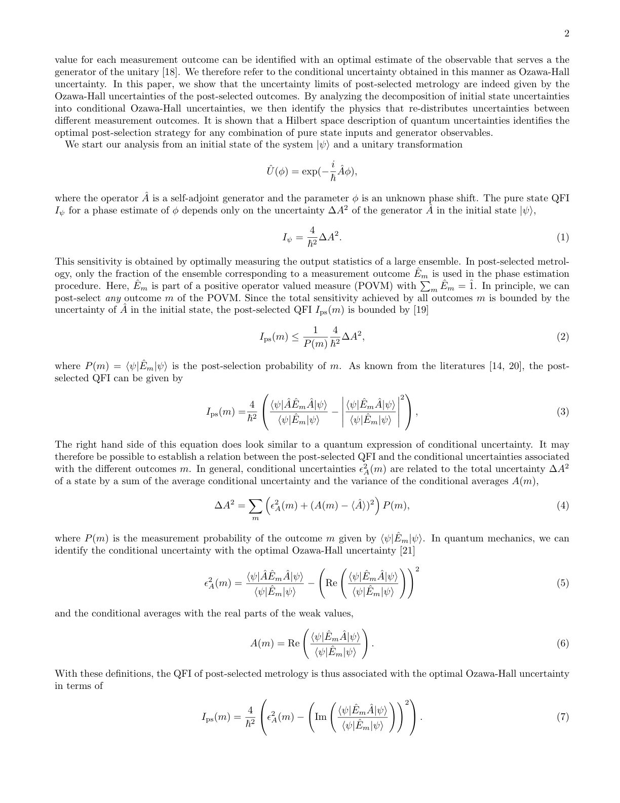
<figcaption class="paper-figure-caption"><b>Fig 1.</b> Low-resolution page preview, page 2</figcaption>
</figure>
<figure class="paper-figure-card">
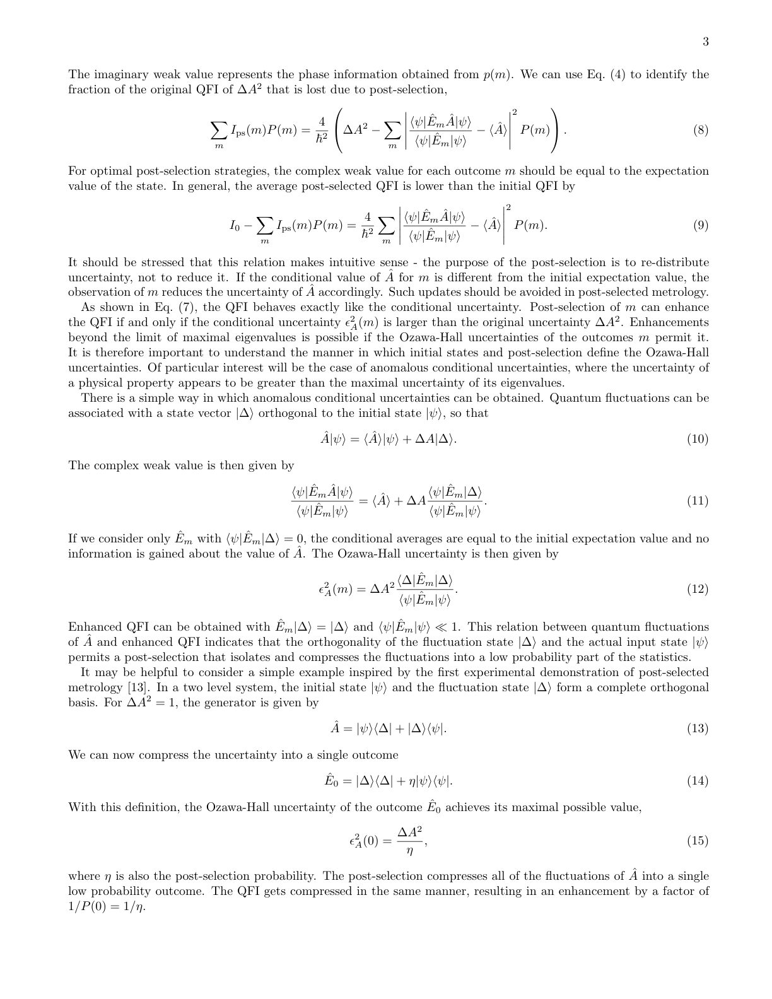
<figcaption class="paper-figure-caption"><b>Fig 2.</b> Low-resolution page preview, page 3</figcaption>
</figure>
<figure class="paper-figure-card">
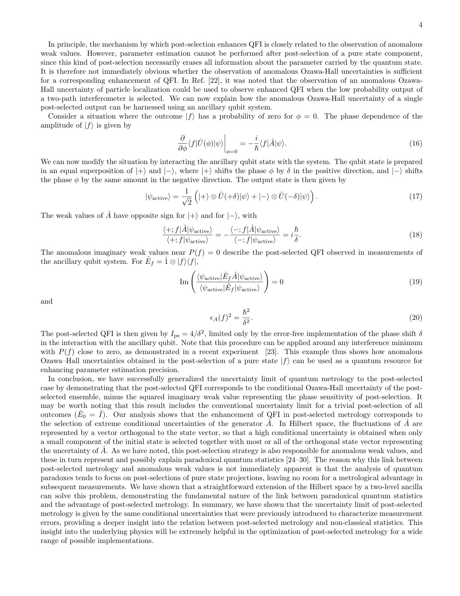
<figcaption class="paper-figure-caption"><b>Fig 3.</b> Low-resolution page preview, page 4</figcaption>
</figure>
<figure class="paper-figure-card">
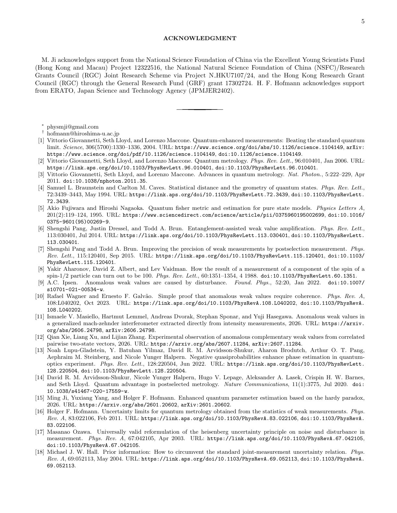
<figcaption class="paper-figure-caption"><b>Fig 4.</b> Low-resolution page preview, page 5</figcaption>
</figure>
<figure class="paper-figure-card">
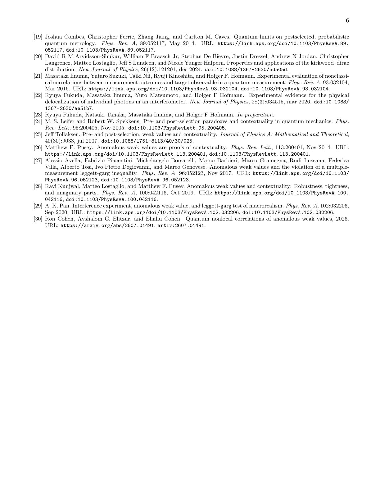
<figcaption class="paper-figure-caption"><b>Fig 5.</b> Low-resolution page preview, page 6</figcaption>
</figure>
</div>

<p><strong>Summary.</strong> This paper analyzes the uncertainty limits in quantum metrology when post-selection measurements are used. It proves that the achievable precision is governed by the Ozawa-Hall uncertainty associated with the measurement outcomes. The key finding is that post-selection can enhance sensitivity beyond standard limits by selectively amplifying certain quantum fluctuations.</p>
<p><strong>Why it may be interesting.</strong> This work provides a rigorous theoretical framework connecting measurement back-action (post-selection) to fundamental limits on precision, which is crucial for designing quantum sensors and understanding the limits of quantum metrology.</p>
<details>
<summary>Detailed structure</summary>
<p><strong>Main problem.</strong> The paper investigates the fundamental uncertainty limits governing quantum estimation precision when post-selection measurements are performed on a quantum system.</p>
<p><strong>Main result.</strong> It shows that the achievable precision (QFI) in post-selected metrology is determined by the conditional Ozawa-Hall uncertainties associated with the measurement outcomes.</p>
<p><strong>Method.</strong> The analysis involves deriving the post-selected QFI by relating it to the conditional quantum statistics of the generator, specifically utilizing the Ozawa-Hall uncertainty formalism.</p>
<p><strong>Model / system.</strong> The study models parameter estimation for a unitary transformation $\hat{U}(\phi) = \exp(-i rac{\phi}{\hbar} \hat{A})$, where $\hat{A}$ is the generator. Simple examples use two-level systems, while advanced analysis employs ancillary qubit systems.</p>
<p><strong>Key observables.</strong> Quantum Fisher Information (QFI), Ozawa-Hall uncertainty ($\epsilon^2_A(m)$), and anomalous imaginary weak values.</p>
<p><strong>Important parameters / regimes.</strong> The unknown phase shift ($\phi$), the generator uncertainty ($\Delta A^2$), and the post-selection probability ($P(m)$ or $\eta$).</p>
<p><strong>Assumptions / limitations.</strong> The enhancement mechanism relies on the ability to concentrate quantum fluctuations into low-probability post-selection outcomes, and the analysis assumes the validity of the Ozawa-Hall uncertainty definition for conditional statistics.</p>
<p><strong>Paper structure.</strong> The paper first establishes the relationship between QFI and generator uncertainty for unitary transformations. It then introduces the post-selected QFI and links it mathematically to the Ozawa-Hall uncertainty. The core development involves demonstrating how post-selection leads to enhancements beyond standard limits, often illustrated using ancillary qubit systems and weak value calculations.</p>
</details>
<details>
<summary>Abstract</summary>
<p>For unitary transformations, the quantum Fisher information (QFI) of a pure state is given by the uncertainty of the generator in that state. In post-selected metrology, the QFI is given by a modified expression describing conditional quantum statistics of the generator. Here, we show that the conditional generator uncertainties defined by post-selected QFI correspond to Ozawa-Hall uncertainties known from the theoretical analysis of quantum measurements. The post-selected measurement outcome updates the generator uncertainty according to the quantum statistics of that outcome. Enhancements of QFI beyond the maximal uncertainties of the generator eigenvalues are possible because post-selection tends to concentrate the largest part of the initial generator uncertainty in low probability outcomes of the post-selection measurement. Anomalous conditional uncertainties thus explain the extreme sensitivities that can be achieved in post-selected metrology.</p>
</details>
<p><sub><a href="#top">↑ back to top</a></sub></p>

<p><a id="paper-2608.26862"></a></p>
<h3 id="bound-state-mediated-remote-charging-of-a-quantum-battery"><a href="http://arxiv.org/abs/2608.26862v1">Bound-state-mediated remote charging of a quantum battery</a></h3>
<p><strong>Authors:</strong> Jian-Jian Cheng, Hai-Bo Qiu, Lin Zhang, Ming-Liang Hu<br>
<strong>Type:</strong> theory · <strong>Category:</strong> other · <strong>PDF:</strong> <a href="https://arxiv.org/pdf/2608.26862v1">https://arxiv.org/pdf/2608.26862v1</a><br>
<strong>Analysis basis:</strong> full PDF text, analyzed in chunks
<strong>Topic relevance:</strong> <code>analog quantum simulation</code> <strong>3/5</strong> · <code>correlated / nonlocal dissipation</code> <strong>3/5</strong> · <code>methods for driven-dissipative</code> <strong>3/5</strong> · <code>Tavis-Cummings &amp; cavity-many-emitter</code> <strong>2/5</strong> · <code>driven-dissipative phase transition</code> <strong>2/5</strong> · <code>Keldysh / 2PI / non-Gaussian methods</code> <strong>1/5</strong> · <code>interference shaping light</code> <strong>1/5</strong> · <code>non-equilibrium universality</code> <strong>1/5</strong> · <code>quantum measurements</code> <strong>1/5</strong></p>
<div class="figure-strip-hint">↔ Scroll figures horizontally</div>
<div class="paper-figures-scroll">
<figure class="paper-figure-card">
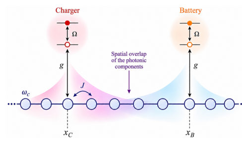
<figcaption class="paper-figure-caption"><b>Fig 1.</b> FIG. 1: Schematic of remote charging, where the charger and battery are two spatially separated TLSs without direct coupling. They have transition frequency Ωand are locally coupled to a one-dimensional coupled-cavity array at sites xC and xB, with the coupling strength g and separation d = |xB −xC|. Each cavity has frequency ωc, and the hopping amplitude between the neighboring cavities is J.</figcaption>
</figure>
<figure class="paper-figure-card">
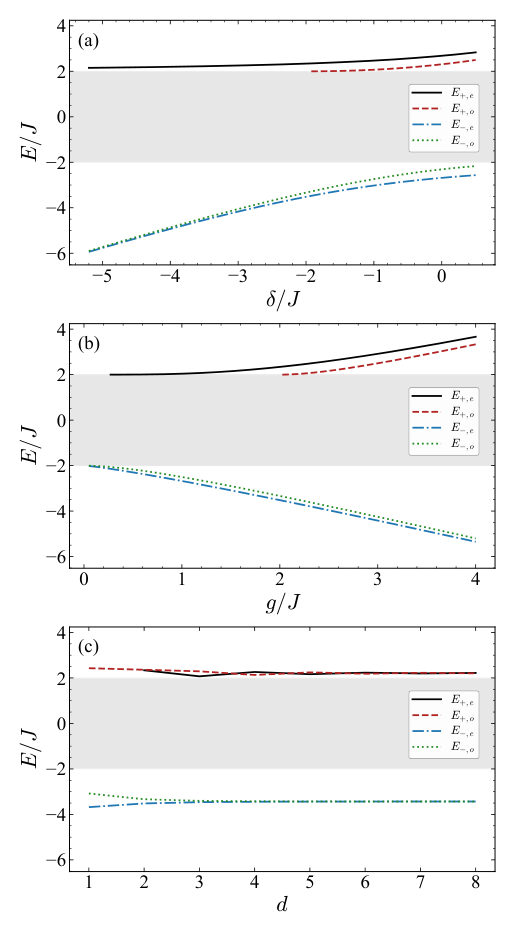
<figcaption class="paper-figure-caption"><b>Fig 2.</b> FIG. 2: Out-of-band bound-state spectrum. The gray shaded region marks the photonic continuum −2J &lt; E &lt; 2J. The four lines outside it are the upper-band even-parity E+,e and odd-parity E+,o, the lower- band even-parity E−,e and odd-parity E−,o branches. (a) E/J vs δ/J at fixed g/J = 2 and d = 2. (b) E/J vs g/J at fixed δ/J = −2 and d = 2. (c) E/J vs d at fixed δ/J = −2 and g/J = 2.</figcaption>
</figure>
<figure class="paper-figure-card">
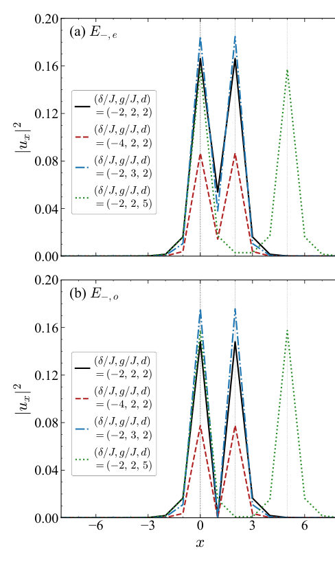
<figcaption class="paper-figure-caption"><b>Fig 3.</b> FIG. 3: Real-space photon distribution |ux|2 of the lower-band even- parity bound state E−,e (a) and odd-parity bound state E−,o (b). The vertical dotted lines mark the charger at xC = 0 and the QB at xB = 2 and xB = 5, respectively.</figcaption>
</figure>
<figure class="paper-figure-card">
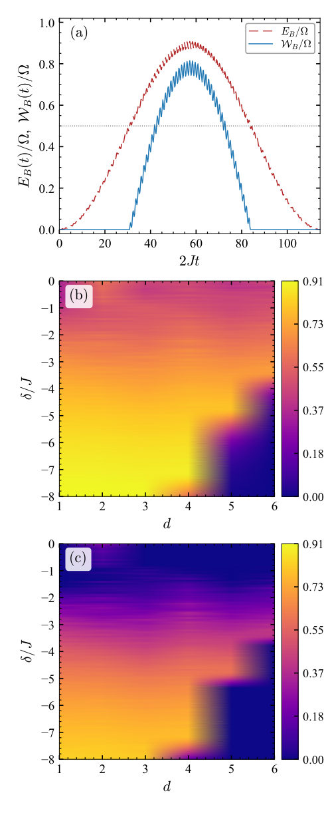
<figcaption class="paper-figure-caption"><b>Fig 4.</b> FIG. 4: (a) Dynamics of EB(t)/Ωand WB(t)/Ωfor d = 1 and δ/J = −8, where the horizontal dotted line marks the threshold EB/Ω= 1/2. (b) The stored maximum energy EB,max/Ωvs d and δ/J. (c) The charged maximum ergotropy WB,max/Ωvs d and δ/J. The coupling is fixed at g/J = 2 in all the plots.</figcaption>
</figure>
<figure class="paper-figure-card">
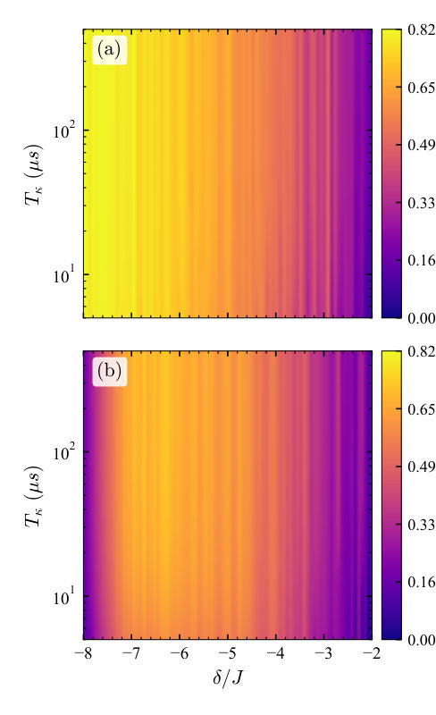
<figcaption class="paper-figure-caption"><b>Fig 5.</b> FIG. 5: The maximum ergotropy WB,max/Ωobtained from the Lind- blad dynamics (24) for (a) d = 1 and (b) d = 3. Other parameters are g/J = 2, T C 1 = 30µs, and T B 1 = 200µs. The cavity lifetime Tκ varies from 5 µs to 500 µs on a logarithmic scale.</figcaption>
</figure>
</div>

<p><strong>Summary.</strong> This paper investigates how to remotely charge a quantum battery by utilizing the bound states formed when the system's energy lies outside the photonic band gap. The key mechanism is the lifting of degeneracy between even and odd parity bound states, which drives coherent energy transfer. The results show that this bound-state mediation allows for efficient charging, with performance controlled by the separation distance and dissipation rates.</p>
<p><strong>Why it may be interesting.</strong> This work directly addresses energy transfer in open quantum systems using engineered photonic structures, which is a core topic in cavity QED and quantum optics.</p>
<details>
<summary>Detailed structure</summary>
<p><strong>Main problem.</strong> The remote charging of a quantum battery (QB) is hindered by energy leakage into the photonic environment.</p>
<p><strong>Main result.</strong> The system achieves coherent remote charging when the TLS frequency lies outside the photonic band, forming localized bound states that mediate energy transfer via an even-odd energy splitting.</p>
<p><strong>Method.</strong> The analysis uses the single-excitation Hamiltonian, solving for bound states and analyzing time evolution using the Lindblad master equation.</p>
<p><strong>Model / system.</strong> The model consists of two two-level systems (TLSs) acting as a charger and a battery, coupled to two sites of a one-dimensional coupled cavity array.</p>
<p><strong>Key observables.</strong> Charging time, stored energy ($E_B(t)$), and charged ergotropy ($W_B(t)$).</p>
<p><strong>Important parameters / regimes.</strong> Separation distance ($d$), detuning ($\delta$), cavity hopping ($J$), and photon loss rate ($\kappa$).</p>
<p><strong>Assumptions / limitations.</strong> The dynamics are confined to the single-excitation sector, and the analysis often assumes the thermodynamic limit ($N 	o \infty$).</p>
<p><strong>Figures summary.</strong> Figure 1 schematically shows the setup. Figure 2 displays the four derived bound state energy branches. Figure 5 shows the maximum ergotropy as a function of cavity lifetime and detuning.</p>
<p><strong>Paper structure.</strong> The paper first establishes the model and the role of the photonic band gap. It then derives the bound state energies and shows how the even-odd splitting facilitates energy transfer. Finally, it analyzes the charging dynamics and the impact of dissipation.</p>
</details>
<details>
<summary>Abstract</summary>
<p>Remote charging of a quantum battery (QB) is hindered by radiative leakage of the excitation into the photonic environment that acts as a mediator for energy transfer. We consider a charger-battery model consisting of two two-level systems (TLSs) that are locally coupled to two sites of a one-dimensional coupled cavity array. When their transition frequency lies outside the propagation band, the system forms atom-photon bound states with localized photonic components, and the overlap of these components lifts the degeneracy of the even- and odd-parity bound states, yielding an energy splitting that drives coherent energy transfer from the charger to the QB. In this way, the band gap suppresses resonant emission and the localized bound states mediate remote charging. From the parity-resolved spectrum, we relate the charging time to the energy splitting and the charged ergotropy to the fraction of TLS population on the bound states. Bound states closer to the band edge extend the interaction range of the TLSs but contain a large photonic fraction and are consequently more susceptible to photon loss.</p>
</details>
<p><sub><a href="#top">↑ back to top</a></sub></p>

<p><a id="paper-2608.26554"></a></p>
<h3 id="comparison-of-two-atom-cross-spectra-in-de-sitter-spacetime-uniformly-accelerated-minkowski-vacuum-and-a-thermal-bath"><a href="http://arxiv.org/abs/2608.26554v1">Comparison of Two-Atom Cross Spectra in de Sitter Spacetime, Uniformly Accelerated Minkowski Vacuum, and a Thermal Bath</a></h3>
<p><strong>Authors:</strong> Zhiming Huang<br>
<strong>Type:</strong> theory · <strong>Category:</strong> other · <strong>PDF:</strong> <a href="https://arxiv.org/pdf/2608.26554v1">https://arxiv.org/pdf/2608.26554v1</a><br>
<strong>Analysis basis:</strong> full PDF text, analyzed in chunks
<strong>Topic relevance:</strong> <code>Keldysh / 2PI / non-Gaussian methods</code> <strong>3/5</strong> · <code>correlated / nonlocal dissipation</code> <strong>3/5</strong> · <code>driven-dissipative phase transition</code> <strong>2/5</strong> · <code>interference shaping light</code> <strong>2/5</strong> · <code>methods for driven-dissipative</code> <strong>2/5</strong> · <code>non-equilibrium universality</code> <strong>2/5</strong> · <code>quantum measurements</code> <strong>2/5</strong></p>
<div class="figure-strip-hint">↔ Scroll figures horizontally</div>
<div class="paper-figures-scroll">
<figure class="paper-figure-card">
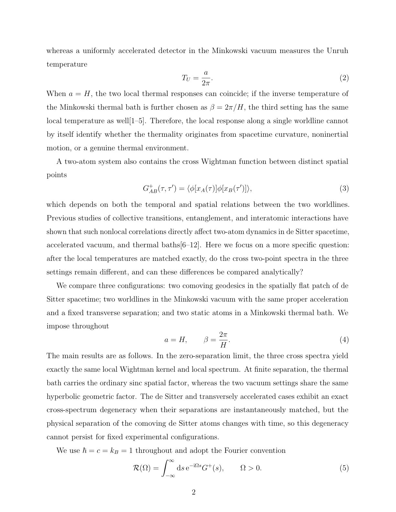
<figcaption class="paper-figure-caption"><b>Fig 1.</b> Low-resolution page preview, page 2</figcaption>
</figure>
<figure class="paper-figure-card">
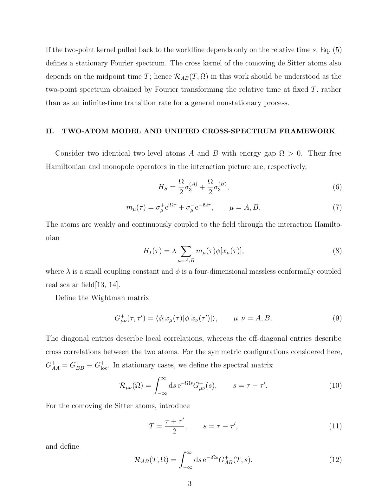
<figcaption class="paper-figure-caption"><b>Fig 2.</b> Low-resolution page preview, page 3</figcaption>
</figure>
<figure class="paper-figure-card">
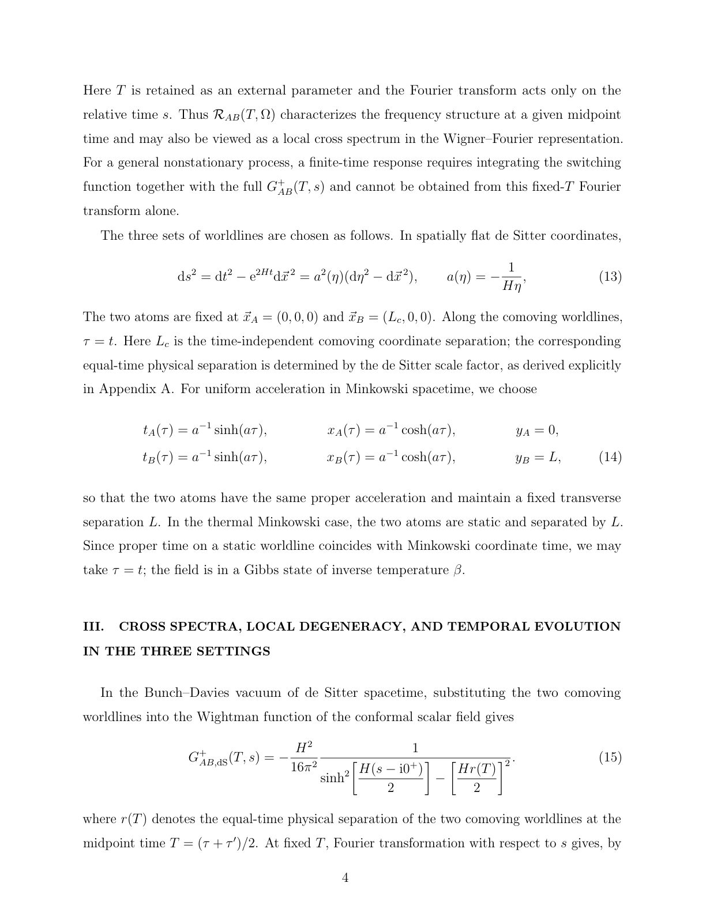
<figcaption class="paper-figure-caption"><b>Fig 3.</b> Low-resolution page preview, page 4</figcaption>
</figure>
<figure class="paper-figure-card">
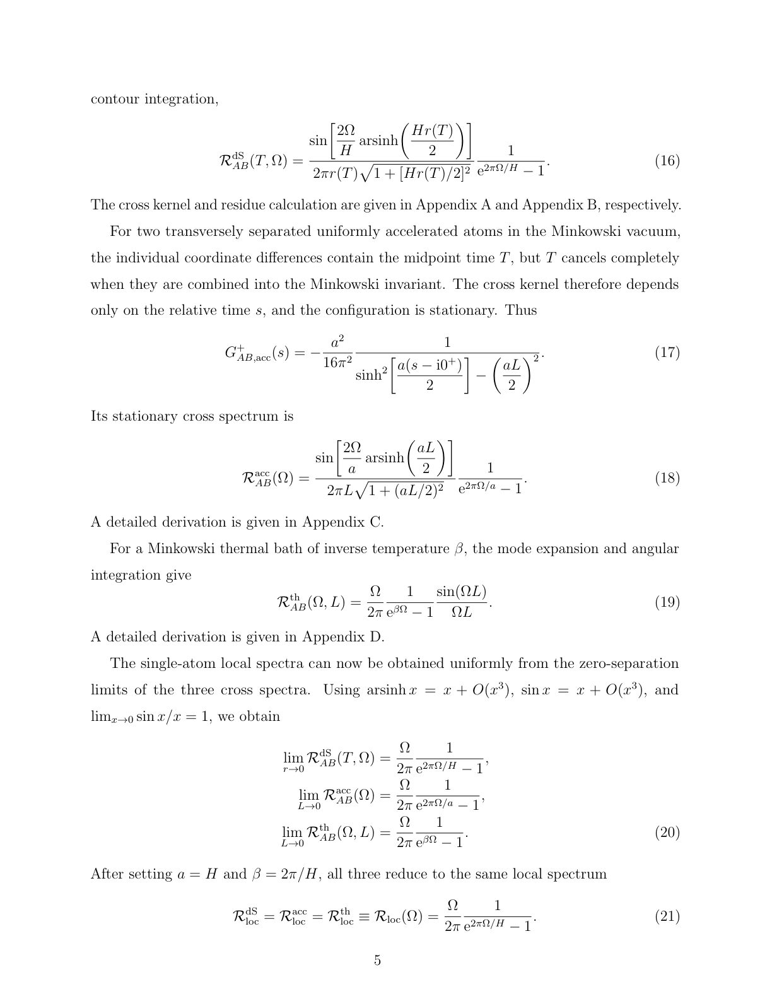
<figcaption class="paper-figure-caption"><b>Fig 4.</b> Low-resolution page preview, page 5</figcaption>
</figure>
<figure class="paper-figure-card">
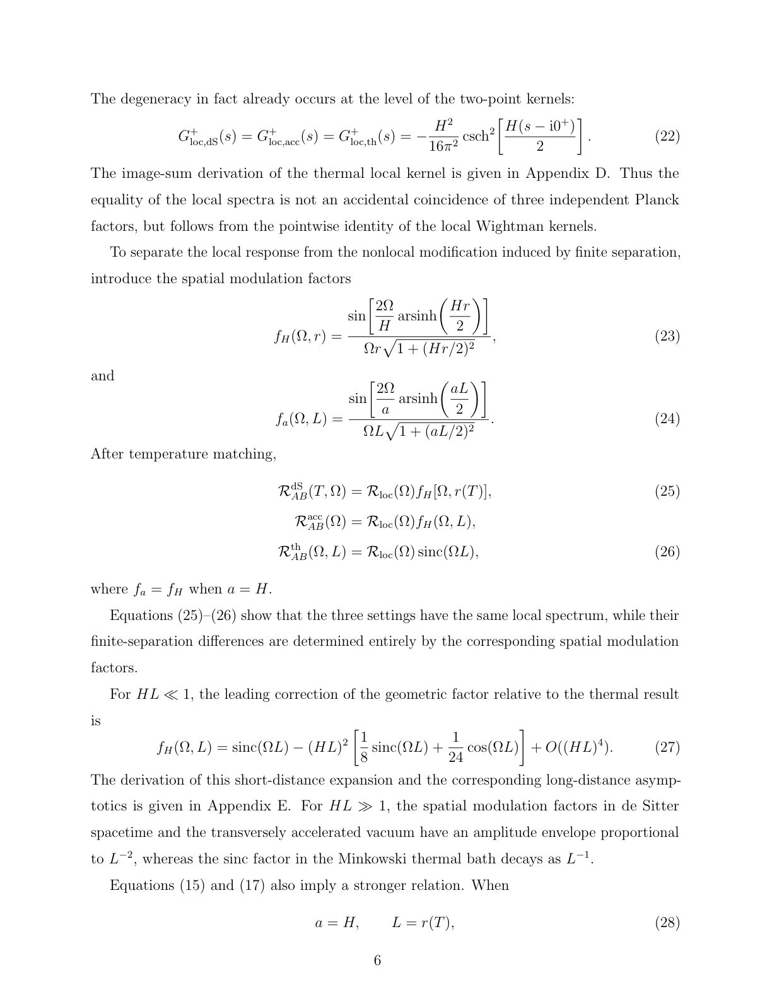
<figcaption class="paper-figure-caption"><b>Fig 5.</b> Low-resolution page preview, page 6</figcaption>
</figure>
</div>

<p><strong>Summary.</strong> This theoretical study compares the quantum correlations (cross spectra) of two atoms coupled to a scalar field in de Sitter spacetime, an accelerated vacuum, and a thermal bath. The key finding is that while the local physics can be made identical by tuning parameters, the finite separation correlations reveal distinct signatures, particularly in their spatial dependence and long-distance decay rates.</p>
<p><strong>Why it may be interesting.</strong> This work is highly relevant to open quantum systems and quantum optics as it explores how the environment (spacetime curvature vs. thermal bath) dictates the correlations measured by quantum probes, even when local conditions are matched.</p>
<details>
<summary>Detailed structure</summary>
<p><strong>Main problem.</strong> The paper compares the two-atom cross spectra of identical two-level atoms coupled to a massless conformally coupled scalar field across three distinct physical settings: de Sitter spacetime, uniformly accelerated Minkowski vacuum, and a Minkowski thermal bath.</p>
<p><strong>Main result.</strong> While the local spectra are identical under specific parameter matching ($a=H, eta=2\pi/H$), the finite separation cross spectra differ significantly, showing distinct spatial modulation factors and different long-distance decay rates ($L^{-2}$ vs $L^{-1}$).</p>
<p><strong>Method.</strong> The authors derive the cross spectra by calculating the two-point Wightman function in each background and performing Fourier transforms with respect to the time difference.</p>
<p><strong>Model / system.</strong> The system involves two two-level atoms weakly coupled to a massless, conformally coupled scalar field ($\phi$). The comparisons are made in the Bunch-Davies vacuum of de Sitter spacetime, the accelerated vacuum of Minkowski space, and a thermal bath in Minkowski space.</p>
<p><strong>Key observables.</strong> Two-atom cross spectra ($R^{AB}(\Omega)$), local Wightman kernels, and spatial modulation factors.</p>
<p><strong>Important parameters / regimes.</strong> Local temperature parameters ($H, eta$), separation distance ($L$), and coupling constant ($\lambda$).</p>
<p><strong>Assumptions / limitations.</strong> Weak coupling ($\lambda$ is small); the analysis relies on matching parameters like local temperature and instantaneous separation to find degeneracies.</p>
<p><strong>Figures summary.</strong> The notes do not provide a summary of figures, but they detail the mathematical forms of the cross spectra in the three different backgrounds.</p>
<p><strong>Paper structure.</strong> The paper proceeds by deriving the cross spectra for each of the three settings (dS, accelerated, thermal) and then comparing them, first in the zero-separation limit (local spectra) and then at finite separation, highlighting the differences in spatial dependence and long-distance decay.</p>
</details>
<details>
<summary>Abstract</summary>
<p>We study the weak coupling of two identical two-level atoms to a four-dimensional massless conformally coupled scalar field and compare three settings with the same local temperature but different physical origins: comoving atoms in the Bunch--Davies vacuum of de Sitter spacetime, transversely separated uniformly accelerated atoms in the Minkowski vacuum, and static atoms in a Minkowski thermal bath. We first derive the two-atom cross spectra in the three settings and then obtain the single-atom local spectra uniformly from the zero-separation limit. When $a=H$ and $β=2π/H$, the complete local Wightman kernels and local spectra are identical in all three cases. At finite separation, a genuine thermal bath produces a $\sinc(ΩL)$ spatial factor, whereas de Sitter spacetime and the transversely accelerated vacuum produce a hyperbolic geometric factor. In the long-distance limit, the cross correlations in de Sitter spacetime and the transversely accelerated vacuum decay as $L^{-2}$, whereas those in the Minkowski thermal bath decay only as $L^{-1}$. The de Sitter and transversely accelerated vacuum cross spectra coincide when $a=H$ and the separations are instantaneously matched. For a fixed experimental setup, the physical separation between the two comoving atoms in de Sitter space evolves with cosmic expansion, whereas the pulled-back cross correlations in the uniformly accelerated and thermal Minkowski configurations are stationary.</p>
</details>
<p><sub><a href="#top">↑ back to top</a></sub></p>

<p><a id="paper-2608.26646"></a></p>
<h3 id="a-thermometric-quantum-brownian-model-for-low-temperature-electronics"><a href="http://arxiv.org/abs/2608.26646v1">A thermometric quantum Brownian model for low-temperature electronics</a></h3>
<p><strong>Authors:</strong> Harry T. H. Fung, Thomas M. Stace<br>
<strong>Type:</strong> theory · <strong>Category:</strong> statistical mechanics · <strong>PDF:</strong> <a href="https://arxiv.org/pdf/2608.26646v1">https://arxiv.org/pdf/2608.26646v1</a><br>
<strong>Analysis basis:</strong> full PDF text, analyzed in chunks
<strong>Topic relevance:</strong> <code>correlated / nonlocal dissipation</code> <strong>3/5</strong> · <code>driven-dissipative phase transition</code> <strong>3/5</strong> · <code>methods for driven-dissipative</code> <strong>3/5</strong> · <code>Keldysh / 2PI / non-Gaussian methods</code> <strong>2/5</strong> · <code>non-equilibrium universality</code> <strong>2/5</strong> · <code>quantum measurements</code> <strong>2/5</strong></p>
<div class="figure-strip-hint">↔ Scroll figures horizontally</div>
<div class="paper-figures-scroll">
<figure class="paper-figure-card">
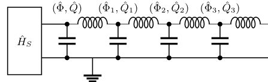
<figcaption class="paper-figure-caption"><b>Fig 1.</b> Figure 1. The waveguide model of a resistor, consisting of an infinite series of capacitors and inductors, connected to a system. The leftmost nodes are the two resistor terminals.</figcaption>
</figure>
<figure class="paper-figure-card">
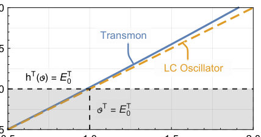
<figcaption class="paper-figure-caption"><b>Fig 2.</b> Figure 2. Steady state energy of a transmon hT(T) (solid) and an LC oscillator hLC(T) (dashed) as a function of the thermo- metric parameter ϑ. The shaded region below hT(ϑ) = ET 0 indicates the unphysical region where ϑT does not corre- spond to a physical temperature. Device parameters used here and in subsequent figures are EJ/h = 25 √</figcaption>
</figure>
<figure class="paper-figure-card">
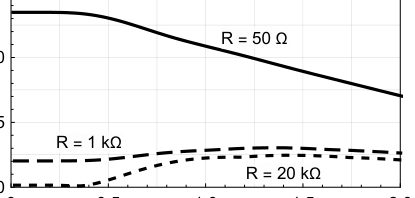
<figcaption class="paper-figure-caption"><b>Fig 3.</b> Figure 4. Trace distance between the QBME steady state ¯ρϑ(T ) and the Gibbs state ρG Eq. (3) of a transmon as a function of temperature. Results are shown for resistances of 50 Ω(solid), 1 kΩ(long dashes) and 20 kΩ(short dashes).</figcaption>
</figure>
<figure class="paper-figure-card">
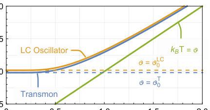
<figcaption class="paper-figure-caption"><b>Fig 4.</b> Figure 3. The thermometric parameter ϑ as a function of the physical temperature T for the LC oscillator (see Eq. (17)) and the transmon. Also shown is the thermometric parameter for the standard QBME Eq. (1), for which ϑ = kBT. ϑLC,T 0 is the value at which hLC,T(ϑ) = ELC,T 0 .</figcaption>
</figure>
<figure class="paper-figure-card">
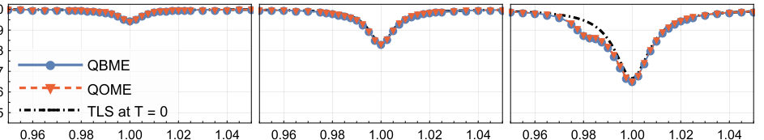
<figcaption class="paper-figure-caption"><b>Fig 5.</b> Figure 5. Each panel depicts the ground state population at equilibrium of a driven transmon shunted by a resistor (see Eq. (19)) as a function of the drive frequency. The dissipation rate increases down the rows (eΓ = Γ/ω0 = {0.0025, 0.005, 0.01}) and the Rabi frequency increases along the columns (eΩ= Ω/ω0 = {0.0025, 0.005, 0.01}). The ground state population is calculated with the thermometric QBME (circle, solid line), QOME (triangle, dashed line), and the analytical solution for a damped two-level system at zero temperature (dot-dashed line) (see Eq. (20)). Temperature is T = 15 mK (kBT/ℏω0 ≈0.03).</figcaption>
</figure>
</div>

<p><strong>Summary.</strong> This paper proposes a thermometric modification to the Quantum Brownian Model Equation (QBME) to accurately model resistive dissipation in superconducting circuits at low temperatures. By enforcing thermodynamic self-consistency, the model resolves unphysical predictions found in standard formulations. The results demonstrate that this modified approach provides a physically robust framework for analyzing quantum dissipation in superconducting electronics.</p>
<p><strong>Why it may be interesting.</strong> This work directly addresses the modeling of open quantum systems in superconducting circuits, a key area where non-equilibrium statistical mechanics and open quantum system theory intersect. The comparison between different master equation formalisms (Lindbladian vs. non-Lindbladian) is highly relevant.</p>
<details>
<summary>Detailed structure</summary>
<p><strong>Main problem.</strong> Developing a quantum mechanical model for resistors in low-temperature electronics that respects fundamental physical symmetries, particularly flux-translation invariance, while remaining thermodynamically consistent.</p>
<p><strong>Main result.</strong> The proposed thermometric Quantum Brownian Model (QBME) successfully resolves the unphysical low-temperature behavior of standard QBME formulations, showing good agreement with the Quantum Optical Master Equation (QOME) in certain regimes.</p>
<p><strong>Method.</strong> The authors compare three models (QOME, standard QBME, and a modified 'thermometric' QBME) by enforcing thermodynamic self-consistency constraints derived from the Gibbs free energy.</p>
<p><strong>Model / system.</strong> The system models resistive dissipation in superconducting quantum devices, such as a transmon shunted by a resistor. The models are based on master equations (QOME and QBME) derived from the Caldeira-Leggett theory.</p>
<p><strong>Key observables.</strong> Ground state population ($
ho_{00}$), steady-state energy expectation ($\langle\hat{H}<em ss>S
angle</em>$), and the trace distance between the model state and the Gibbs state.</p>
<p><strong>Important parameters / regimes.</strong> Low temperatures ($k_B T 	o 0$), dissipation rate ($\Gamma$), and the ratio $k_B T / \hbar \omega_0$.</p>
<p><strong>Assumptions / limitations.</strong> The thermometric modification assumes that the system's steady state must be energetically self-consistent with the thermal Gibbs state, leading to a non-Lindbladian master equation.</p>
<p><strong>Figures summary.</strong> Figures compare the ground state population ($
ho_{00}$) vs. drive frequency ($\omega_d / \omega_0$) for the three models at intermediate temperatures, showing close agreement between the thermometric QBME and QOME.</p>
<p><strong>Paper structure.</strong> The paper first establishes the limitations of QOME and standard QBME. It then introduces the thermometric QBME by enforcing thermodynamic self-consistency. Finally, it compares the resulting predictions for observables like ground state populations across different temperature regimes.</p>
</details>
<details>
<summary>Abstract</summary>
<p>Quantum mechanical models of resistors in quantum electronics are often based on the quantum optical master equation (QOME). The QOME overlooks several fundamental properties, limiting its ability to model certain superconducting phenomena. Here we present a thermometric model of resistors, adapted from the quantum Brownian motion equation (QBME), that facilitates practical use of the QBME in modelling dissipative electronics at low temperatures. We compare the thermometric QBME presented here with predictions of the QOME, in the simple example of a transmon shunted by a resistor. We show that both the QBME and QOME yield comparable but physically distinct predictions, and discuss potential experimental tests with which to discriminate their use in modelling practical experiments.</p>
</details>
<p><sub><a href="#top">↑ back to top</a></sub></p>

<p><a id="paper-2608.27163"></a></p>
<h3 id="dynamics-and-spectra-of-open-quantum-systems-coupled-to-anharmonic-environments"><a href="http://arxiv.org/abs/2608.27163v1">Dynamics and spectra of open quantum systems coupled to anharmonic environments</a></h3>
<p><strong>Authors:</strong> Kian Damezin, Brendon W. Lovett, Erik M. Gauger, Adam Burgess<br>
<strong>Type:</strong> theory · <strong>Category:</strong> other · <strong>PDF:</strong> <a href="https://arxiv.org/pdf/2608.27163v1">https://arxiv.org/pdf/2608.27163v1</a><br>
<strong>Analysis basis:</strong> full PDF text, analyzed in chunks
<strong>Topic relevance:</strong> <code>Keldysh / 2PI / non-Gaussian methods</code> <strong>3/5</strong> · <code>correlated / nonlocal dissipation</code> <strong>3/5</strong> · <code>driven-dissipative phase transition</code> <strong>3/5</strong> · <code>methods for driven-dissipative</code> <strong>3/5</strong> · <code>non-equilibrium universality</code> <strong>2/5</strong> · <code>quantum measurements</code> <strong>1/5</strong></p>
<div class="figure-strip-hint">↔ Scroll figures horizontally</div>
<div class="paper-figures-scroll">
<figure class="paper-figure-card">
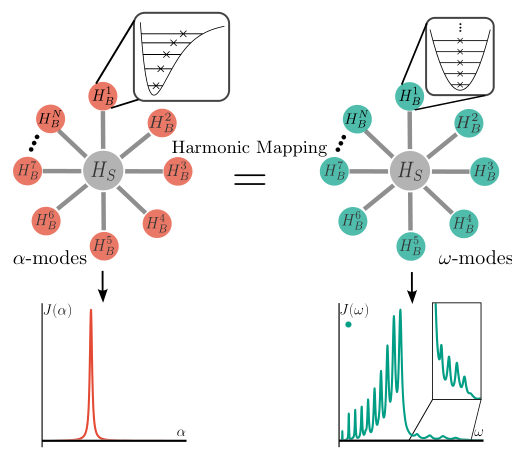
<figcaption class="paper-figure-caption"><b>Fig 1.</b> FIG. 1: Depiction of the mapping from a continuous anharmonic bath to an equivalent continuous harmonic bath. The grey circles represent the system Hamiltonian, coupled to either red α-anharmonic or green ω-harmonic modes, with Hi B denoting the Hamiltonian of the i-th mode. The insert within the red (green) circles illus- trates the corresponding potentials, while crosses repre- sent the mean position of each eigenstate ⟨B⟩. The bare spectral density produced of the anharmonic modes is represented in red. In the thermodynamic limit of an- harmonic modes, N →∞, higher-order correlations of the anharmonic bath operator vanish, allowing the bath to be mapped onto an equivalent harmonic...</figcaption>
</figure>
<figure class="paper-figure-card">
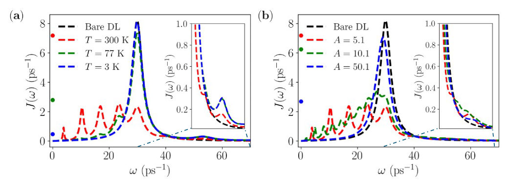
<figcaption class="paper-figure-caption"><b>Fig 2.</b> FIG. 2: The effective spectral density of a Morse oscillator environment with (a) varying temperatures for the ensemble with anharmonicity parameter A = 5.1 and (b) varying anharmonicity parameter A at 300 K, including the coupling of the zero-frequency term indicated at zero frequency. The underlying spectral density is the underdamped Ohmic Lorentzian defined as Bare DL (Eq. (50)) with parameters Ω= 30 ps−1, γ = 4.5 ps−1 and λ = 0.01 ps−1.</figcaption>
</figure>
<figure class="paper-figure-card">
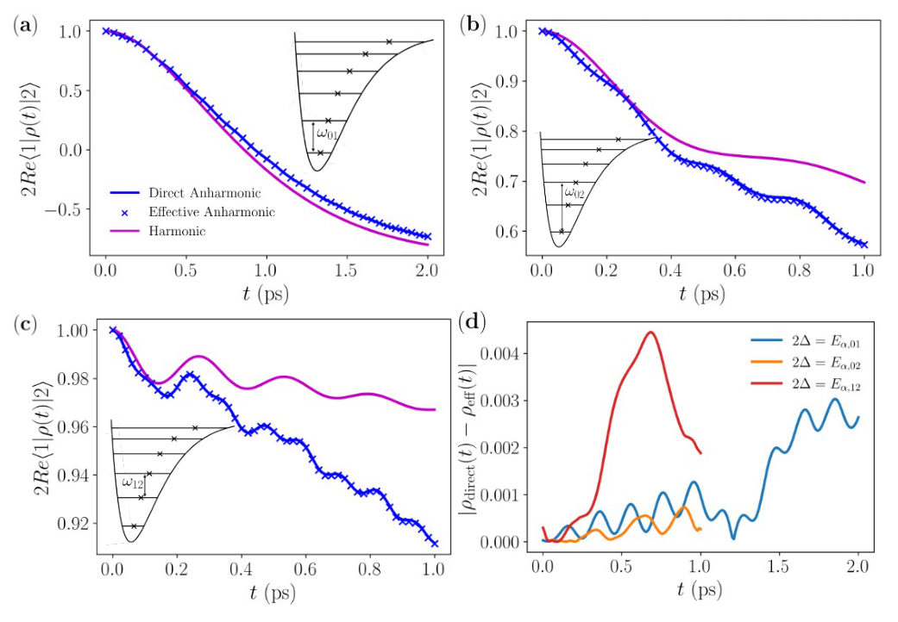
<figcaption class="paper-figure-caption"><b>Fig 3.</b> FIG. 3: Coherence dynamics of a dimer system coupled to a Morse potential-anharmonic environment with a poten- tial depth of A = 5.1 and an underlying underdamped spectral density given by Eq. (50). The direct approach models the environment as a collection of anharmonic oscillations referred to as ‘direct anharmonic’, whereas ‘effective anhar- monic’ and ‘harmonic’ model the environment as a collection of harmonic oscillators with the effective and bare spectral densities, respectively. The spectral density parameters are Ω= 30 ps−1, γ = 0.15Ω, λ = 0.001 ps−1, with system paramaters ϵ0 = ϵ1 = 0 and coupling between monomers are ∆= Eα,01/2, ∆= Eα,12/2, and ∆= Eα,02/2 for panels (a), (b),...</figcaption>
</figure>
<figure class="paper-figure-card">
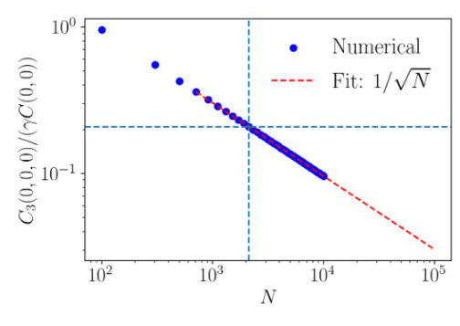
<figcaption class="paper-figure-caption"><b>Fig 4.</b> FIG. 4: Heuristic estimate for the number of discretised modes (N) required for the ratio of the third-order cor- relation function C3 and second-order correlation func- tion C for a Morse oscillator bath with spectral den- sity defined in Fig. 2 to tend to zero. The intersec- tion of the dashed lines indicates the number of modes used in the direct ACE simulations of the dimer coher- ence dynamics. This demonstrates that the discrepancy between the direct and effective mapping approaches arises from the finite discretization of the environment.</figcaption>
</figure>
<figure class="paper-figure-card">
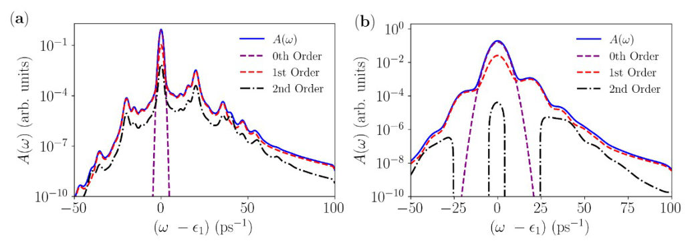
<figcaption class="paper-figure-caption"><b>Fig 5.</b> FIG. 5: Absorption spectra for a molecular dimer within the single-excitation manifold for anharmonicity parameter A = 5.1 at (a) T = 20 K and (b) T = 77 K with spectral density parameters γ = 1.0 ps−1, λ = 0.001 ps−1 and Ω= 20 ps−1. Within each plot, the phonon processes within the absorption spectra are plotted up to 2nd order.</figcaption>
</figure>
</div>

<p><strong>Summary.</strong> This paper presents advanced theoretical frameworks for analyzing open quantum systems coupled to anharmonic environments, moving beyond the limitations of standard harmonic bath models. It develops methods to map anharmonic baths onto effective harmonic ones while also providing tools to analyze complex few-mode anharmonic systems where the mapping breaks down. The results highlight that anharmonicity introduces unique spectral signatures, such as static disorder, and enhances non-Markovian dynamics.</p>
<p><strong>Why it may be interesting.</strong> This work is highly relevant to AMO physics and quantum optics as it provides rigorous theoretical tools to model realistic, non-harmonic coupling to the environment, which is crucial for understanding energy transfer in molecular and condensed matter systems.</p>
<details>
<summary>Detailed structure</summary>
<p><strong>Main problem.</strong> The paper addresses the challenge of accurately modeling the dynamics and spectral properties of open quantum systems coupled to anharmonic environments, which deviate significantly from standard harmonic approximations.</p>
<p><strong>Main result.</strong> The authors develop frameworks to handle both continuous and few-mode anharmonic baths, showing that the anharmonicity introduces unique spectral features, such as a zero-frequency static disorder term and enhanced non-Markovian dynamics.</p>
<p><strong>Method.</strong> The methodology involves developing a matching criterion to map anharmonic environments onto effective harmonic ones, and separately analyzing cases where this mapping fails due to non-Gaussianity.</p>
<p><strong>Model / system.</strong> The system is an open quantum system ($H_S + H_I + H_B$) interacting with an environment modeled by anharmonic oscillators (AMs). The analysis covers both continuum and few-mode bath structures.</p>
<p><strong>Key observables.</strong> System dynamics, absorption/emission spectra, non-Markovianity, and the effective spectral density $J_{	ext{eff}}(\omega, eta)$.</p>
<p><strong>Important parameters / regimes.</strong> Temperature ($eta$), anharmonicity strength, and the number of coupled bath modes.</p>
<p><strong>Assumptions / limitations.</strong> The harmonic mapping is valid for the continuum limit, but the matching criterion fails for few-mode baths due to non-Gaussianity. The analysis often relies on approximations like the secular approximation.</p>
<p><strong>Figures summary.</strong> Figure 1 illustrates the mapping from a continuous anharmonic bath to an equivalent harmonic bath, comparing the bare and effective spectral densities.</p>
<p><strong>Paper structure.</strong> The paper progresses by first establishing the general Hamiltonian and the harmonic mapping for continuous baths. It then develops specific frameworks for few-mode anharmonic environments where the mapping fails, analyzing the resulting unique spectral features and dynamic consequences.</p>
</details>
<details>
<summary>Abstract</summary>
<p>In open quantum systems, the environment is typically modelled as a collection of harmonic oscillators, whereas realistic environments often exhibit unique non-Markovian effects due to the anharmonicity of the environment. Here we present a framework for modelling anharmonic environments in open quantum systems numerically exactly, in which, via a matching criterion, we map the anharmonic environment onto an effective harmonic one. This results in an effective spectral density that is a collection of shifted bare spectra arising from the non-equidistant energy gaps of the anharmonic environment, along with a unique zero-frequency term that effectively acts as static disorder on the system. This is due to the non-zero variance of the diagonal of the bath coupling operator. In tandem, we develop a framework for investigating the effects of environments comprising a few damped anharmonic modes where the matching criterion fails to work due to the non-Gaussianity of the environment. For both continuous and discrete damped anharmonic environments, this work investigates their unique influence on the system's dynamics, including enhanced non-Markovianity compared to a harmonic approximation, novel effects in the absorption spectrum, and the potential for anharmonic environments to enhance energy transport.</p>
</details>
<p><sub><a href="#top">↑ back to top</a></sub></p>

<p><a id="paper-2608.26468"></a></p>
<h3 id="fluctuation-response-relations-from-an-emergent-math245math-symmetry-in-the-rotating-stochastic-landau-model"><a href="http://arxiv.org/abs/2608.26468v1">Fluctuation--response relations from an emergent $\mathbb{Z}_2$ symmetry in the rotating stochastic Landau model</a></h3>
<p><strong>Authors:</strong> Dhruv Kush, Nicki Mullins, Mauricio Hippert, Jorge Noronha<br>
<strong>Type:</strong> theory · <strong>Category:</strong> statistical mechanics · <strong>PDF:</strong> <a href="https://arxiv.org/pdf/2608.26468v1">https://arxiv.org/pdf/2608.26468v1</a><br>
<strong>Analysis basis:</strong> full PDF text, analyzed in chunks
<strong>Topic relevance:</strong> <code>Keldysh / 2PI / non-Gaussian methods</code> <strong>3/5</strong> · <code>correlated / nonlocal dissipation</code> <strong>3/5</strong> · <code>driven-dissipative phase transition</code> <strong>3/5</strong> · <code>non-equilibrium universality</code> <strong>3/5</strong> · <code>methods for driven-dissipative</code> <strong>2/5</strong> · <code>quantum measurements</code> <strong>1/5</strong></p>
<div class="figure-strip-hint">↔ Scroll figures horizontally</div>
<div class="paper-figures-scroll">
<figure class="paper-figure-card">
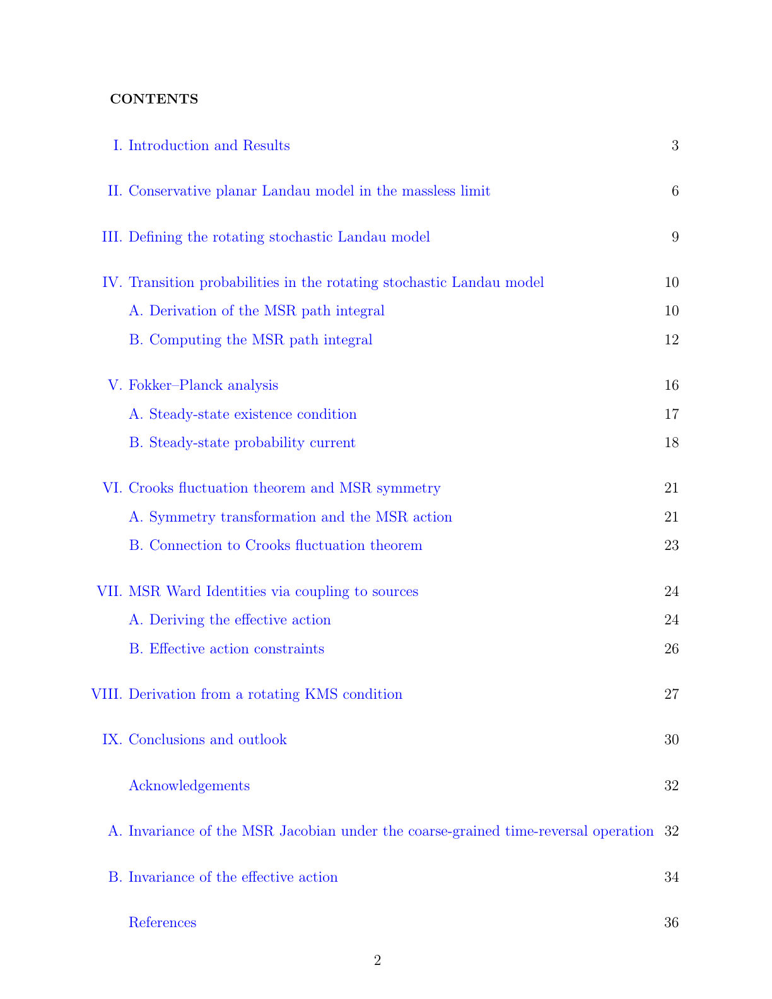
<figcaption class="paper-figure-caption"><b>Fig 1.</b> Low-resolution page preview, page 2</figcaption>
</figure>
<figure class="paper-figure-card">
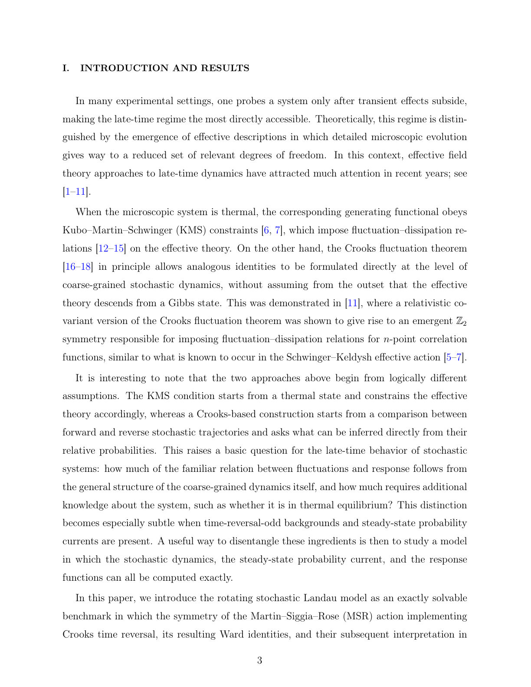
<figcaption class="paper-figure-caption"><b>Fig 2.</b> Low-resolution page preview, page 3</figcaption>
</figure>
<figure class="paper-figure-card">
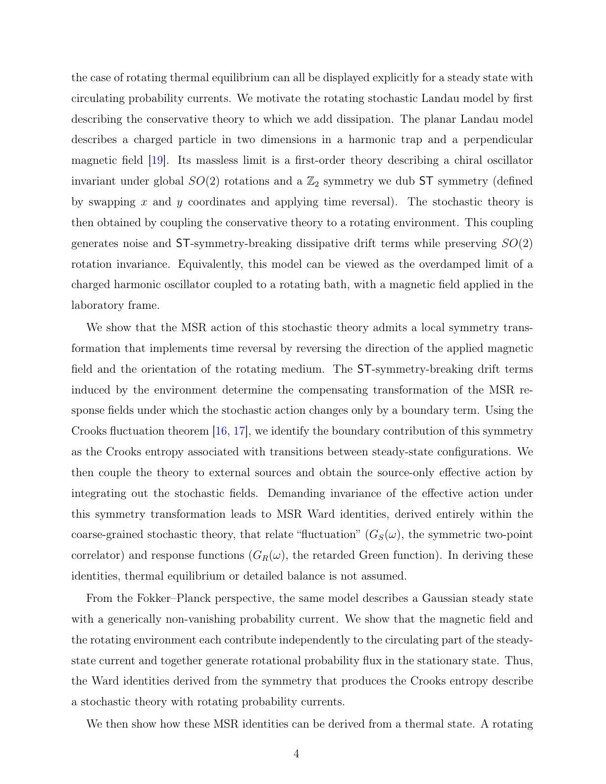
<figcaption class="paper-figure-caption"><b>Fig 3.</b> Low-resolution page preview, page 4</figcaption>
</figure>
<figure class="paper-figure-card">
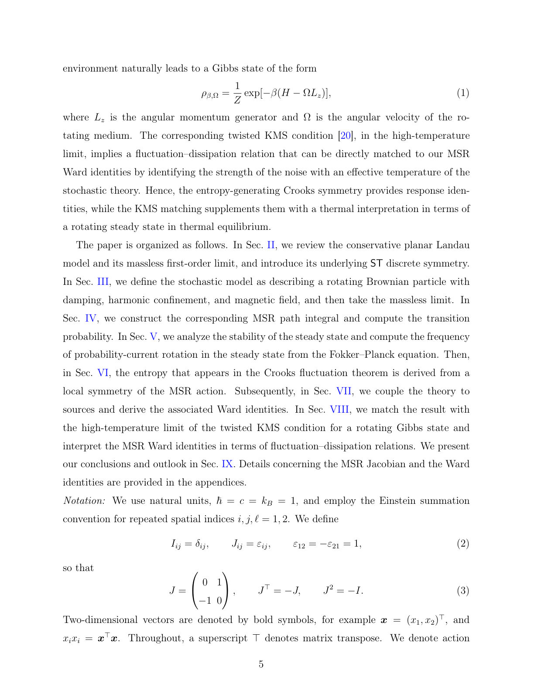
<figcaption class="paper-figure-caption"><b>Fig 4.</b> Low-resolution page preview, page 5</figcaption>
</figure>
<figure class="paper-figure-card">
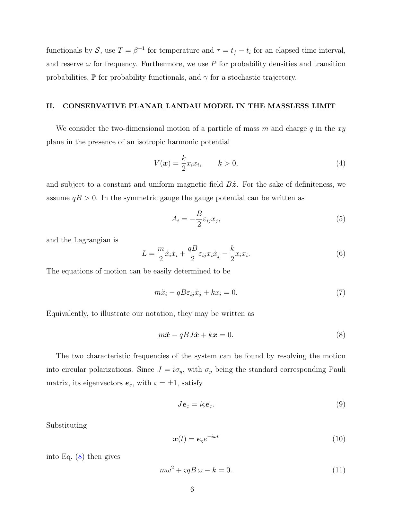
<figcaption class="paper-figure-caption"><b>Fig 5.</b> Low-resolution page preview, page 6</figcaption>
</figure>
</div>

<p><strong>Summary.</strong> This work analyzes the rotating stochastic Landau model to determine the origin of fluctuation-response relations. Using the MSR path integral, the authors derive Ward identities purely from the coarse-grained stochastic dynamics. They demonstrate that these identities successfully match the predictions of the thermal Kubo-Martin-Schwinger condition, establishing a deep connection between symmetry, non-equilibrium dynamics, and thermal physics.</p>
<p><strong>Why it may be interesting.</strong> It provides a rigorous, non-equilibrium framework for deriving fundamental fluctuation-dissipation theorems, which is crucial for understanding open quantum systems where thermal assumptions might break down.</p>
<details>
<summary>Detailed structure</summary>
<p><strong>Main problem.</strong> The paper investigates whether fluctuation-response relations in a complex stochastic system emerge solely from the coarse-grained dynamics or if they require assumptions of thermal equilibrium.</p>
<p><strong>Main result.</strong> The derived Ward identities from the coarse-grained stochastic theory are shown to coincide with the fluctuation-dissipation relations predicted by the rotating Kubo-Martin-Schwinger condition when the Einstein relation is imposed.</p>
<p><strong>Method.</strong> The authors employ the Martin-Siggia-Rose path integral formalism, comparing results derived from symmetry analysis (Ward identities) with those from thermal statistical mechanics (KMS condition).</p>
<p><strong>Model / system.</strong> The system is the rotating stochastic Landau model, describing an overdamped charged Brownian particle in a constant magnetic field coupled dissipatively to a rotating environment.</p>
<p><strong>Key observables.</strong> Fluctuation and response functions ($  ext{GS}(\omega)$ and $  ext{GR}(\omega)$), the emergent $\mathbb{Z}_2$ symmetry, and the Crooks entropy term.</p>
<p><strong>Important parameters / regimes.</strong> Noise strength ($D_B$), rotation frequency ($\Omega$), inverse temperature ($eta$), and magnetic field ($B_{	ext{phys}}$).</p>
<p><strong>Assumptions / limitations.</strong> The analysis focuses on the late-time, coarse-grained stochastic regime, and the final matching requires imposing the Einstein relation.</p>
<p><strong>Figures summary.</strong> Not specified.</p>
<p><strong>Paper structure.</strong> The paper builds from analyzing the conservative planar Landau model, through the stochastic MSR path integral construction, deriving the Crooks symmetry and Ward identities, and concluding with the matching of these results to the rotating Kubo-Martin-Schwinger condition.</p>
</details>
<details>
<summary>Abstract</summary>
<p>In this work, we investigate the extent to which fluctuation--response relations emerge from coarse-grained stochastic dynamics alone, and which aspects instead depend on additional information about the system. To address this question, we study the rotating stochastic Landau model, an exactly solvable system describing an overdamped charged Brownian particle in a constant magnetic field, coupled dissipatively to a rotating environment, whose steady state supports circulating probability currents. Using the Martin--Siggia--Rose path integral, we show that there is an emergent $\mathbb{Z}_2$ symmetry transformation that implements the time-reversed dynamics and changes the action by a boundary term. Comparison with the Crooks fluctuation theorem identifies this term with the entropy associated with transitions between steady-state configurations. After coupling the theory to external sources, the same symmetry yields Ward identities relating fluctuations and response. These identities follow entirely from the coarse-grained stochastic theory and do not fix the noise strength. Finally, upon imposing the Einstein relation, we show that they coincide with the high-temperature fluctuation--dissipation relations implied by the rotating Kubo--Martin--Schwinger condition for a microscopic Gibbs ensemble.</p>
</details>
<p><sub><a href="#top">↑ back to top</a></sub></p>

<p><a id="paper-2608.26609"></a></p>
<h3 id="thermally-quenched-metastability-in-metal-insulator-transitions-via-elemental-substitution"><a href="http://arxiv.org/abs/2608.26609v1">Thermally quenched metastability in metal-insulator transitions via elemental substitution</a></h3>
<p><strong>Authors:</strong> Hiroshi Oike, Yasunori Takahashi, Keisuke Shibuya, Masaki Nakano, Tatsuki Hanada, Motoaki Hirayama, Hiroko Tokoro, Fumitaka Kagawa<br>
<strong>Type:</strong> both · <strong>Category:</strong> statistical mechanics · <strong>PDF:</strong> <a href="https://arxiv.org/pdf/2608.26609v1">https://arxiv.org/pdf/2608.26609v1</a><br>
<strong>Analysis basis:</strong> full PDF text, analyzed in chunks
<strong>Topic relevance:</strong> <code>driven-dissipative phase transition</code> <strong>3/5</strong> · <code>non-equilibrium universality</code> <strong>3/5</strong> · <code>Keldysh / 2PI / non-Gaussian methods</code> <strong>2/5</strong> · <code>methods for driven-dissipative</code> <strong>2/5</strong> · <code>scars &amp; prethermalization</code> <strong>2/5</strong> · <code>Frenkel-Kontorova</code> <strong>1/5</strong> · <code>analog quantum simulation</code> <strong>1/5</strong> · <code>quantum measurements</code> <strong>1/5</strong></p>
<div class="figure-strip-hint">↔ Scroll figures horizontally</div>
<div class="paper-figures-scroll">
<figure class="paper-figure-card">
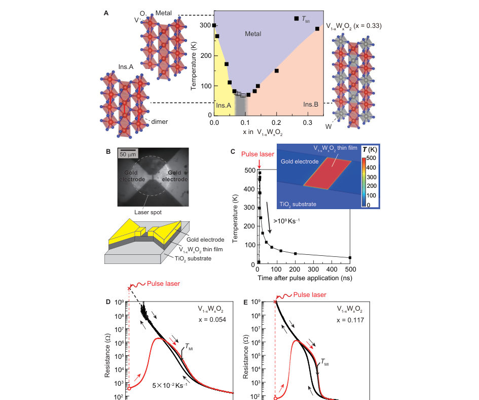
<figcaption class="paper-figure-caption"><b>Fig 1.</b> Figure 1: Thermally quenched metastable metallic phase in V1−𝑥W𝑥O2. (A) Temperature–𝑥</figcaption>
</figure>
<figure class="paper-figure-card">
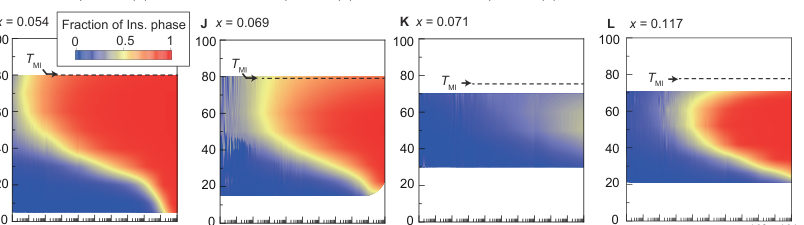
<figcaption class="paper-figure-caption"><b>Fig 2.</b> Figure 2: Isothermal time evolutions from metastable metallic phase to the most stable insu-</figcaption>
</figure>
<figure class="paper-figure-card">
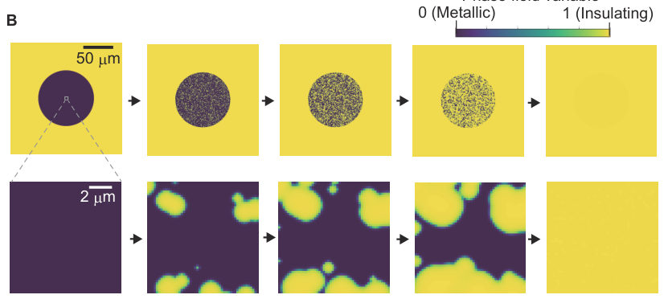
<figcaption class="paper-figure-caption"><b>Fig 3.</b> Figure 3: Real-space imaging of the metal-insulator transition. (A) Isothermal time evolution</figcaption>
</figure>
<figure class="paper-figure-card">
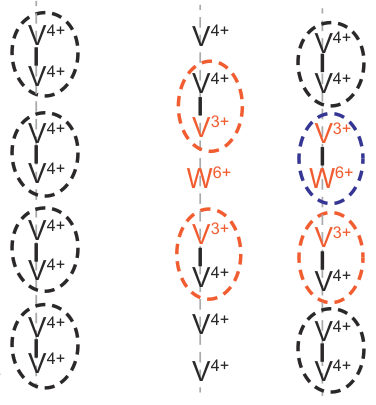
<figcaption class="paper-figure-caption"><b>Fig 4.</b> Figure 4: Evolution of dimer configurations across the metal–insulator transition. (A) Dimer</figcaption>
</figure>
</div>

<p><strong>Summary.</strong> This paper demonstrates that elemental substitution can induce thermally quenched metastability in metal-insulator transitions, moving the concept beyond purely structural systems. By rapidly cooling $  ext{V}_{1-x}    ext{W}_x    ext{O}_2$, the authors stabilize a long-lived metallic phase that relaxes back to the insulating state, confirming that electronic reorganization can be kinetically trapped.</p>
<p><strong>Why it may be interesting.</strong> The work bridges concepts from structural glass physics (quenched metastability) into electronic phase transitions, providing a framework for controlling electronic states via non-equilibrium thermal protocols, which has parallels in controlling quantum states.</p>
<details>
<summary>Detailed structure</summary>
<p><strong>Main problem.</strong> The study investigates whether thermally quenched metastability, typically seen in structural glasses, can be realized in metal-insulator transitions (MITs) governed by electronic reorganization.</p>
<p><strong>Main result.</strong> Elemental substitution in $    ext{V}_{1-x}    ext{W}_x    ext{O}_2$ successfully stabilizes a long-lived, metastable metallic phase upon rapid cooling, confirming that electronic phases can exhibit quenched metastability.</p>
<p><strong>Method.</strong> The research combines ultrafast laser quenching experiments with detailed kinetic modeling (Arrhenius analysis) and theoretical frameworks like the Slichter–Drickamer model and phase-field simulations.</p>
<p><strong>Model / system.</strong> The primary system is tungsten-substituted vanadium dioxide ($  ext{V}_{1-x}    ext{W}_x    ext{O}_2$). The theoretical modeling uses concepts from phase transitions, free-energy landscapes, and domain evolution kinetics.</p>
<p><strong>Key observables.</strong> Metastable metallic phase persistence, relaxation time ($  au$), activation barrier ($\Delta$), and the equilibrium site fraction ($\alpha$).</p>
<p><strong>Important parameters / regimes.</strong> Quenching rates exceeding $10^9 	ext{ K s}^{-1}$; activation barriers in the range of $500–700 	ext{ K}$; doping concentration $x$ in the range $0.05–0.15$.</p>
<p><strong>Assumptions / limitations.</strong> The kinetics are modeled as being nucleation-dominated, and the analysis relies on the assumption that local structural variations induced by substitution create the necessary energy barriers.</p>
<p><strong>Figures summary.</strong> Figures illustrate the temperature-composition phase diagram showing the metastable region, time evolution of resistance post-quenching, and real-space optical imaging confirming nucleation-dominated relaxation.</p>
<p><strong>Paper structure.</strong> The paper progresses from establishing the physical feasibility of quenching MITs to detailing the experimental evidence in $  ext{V}_{1-x}    ext{W}_x    ext{O}_2$, followed by detailed kinetic modeling using free-energy theory and phase-field simulations to explain the microscopic origin of the metastability.</p>
</details>
<details>
<summary>Abstract</summary>
<p>Thermal quenching inhibits equilibration toward the thermodynamic ground state during phase transitions, revealing metastable phases such as structural glasses and quenched alloys. Whether such thermally quenched metastability can be realized in metal-insulator transitions has remained an open question because these transformations are governed by collective electronic reorganization rather than atomic diffusion. We demonstrate that rapid cooling exceeding 10$^9$ K s$^{-1}$ kinetically avoids the metal-insulator transition, stabilizing a long-lived metastable metallic phase in tungsten-substituted VO$_2$. Temperature-dependent relaxation reveals nucleation-dominated kinetics with a thermal activation barrier introduced by tungsten substitution. Our results establish elemental substitution as a route to thermally quenched metastability in metal-insulator transitions, expanding metastable phase control to electronic phases.</p>
</details>
<p><sub><a href="#top">↑ back to top</a></sub></p>

<p><a id="paper-2608.26773"></a></p>
<h3 id="brownian-yet-non-gaussian-diffusion-through-equilibrium-nonlinear-friction"><a href="http://arxiv.org/abs/2608.26773v1">Brownian yet non-Gaussian diffusion through equilibrium nonlinear friction</a></h3>
<p><strong>Authors:</strong> Jakob Mihatsch, Andreas M. Menzel<br>
<strong>Type:</strong> theory · <strong>Category:</strong> statistical mechanics · <strong>PDF:</strong> <a href="https://arxiv.org/pdf/2608.26773v1">https://arxiv.org/pdf/2608.26773v1</a><br>
<strong>Analysis basis:</strong> full PDF text, analyzed in chunks
<strong>Topic relevance:</strong> <code>Keldysh / 2PI / non-Gaussian methods</code> <strong>3/5</strong> · <code>correlated / nonlocal dissipation</code> <strong>2/5</strong> · <code>driven-dissipative phase transition</code> <strong>2/5</strong> · <code>methods for driven-dissipative</code> <strong>2/5</strong> · <code>non-equilibrium universality</code> <strong>2/5</strong> · <code>Frenkel-Kontorova</code> <strong>1/5</strong> · <code>analog quantum simulation</code> <strong>1/5</strong> · <code>quantum measurements</code> <strong>1/5</strong></p>
<div class="figure-strip-hint">↔ Scroll figures horizontally</div>
<div class="paper-figures-scroll">
<figure class="paper-figure-card">
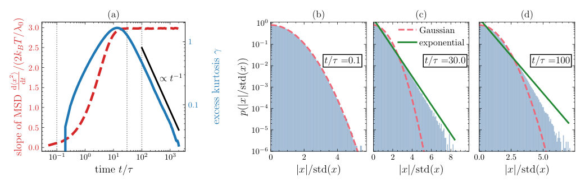
<figcaption class="paper-figure-caption"><b>Fig 1.</b> FIG. 1. Numerical results obtained from integrating Eq. (3) with λ(v) = λ0ϵ tanh(v/ϵ)/v and ϵ2 = 0.1kBT/m, using an Euler- Maruyama scheme. (a) Evolution of the slope of the MSD d⟨x2⟩/dt (red line) and the excess kurtosis γ (blue line) over time in units of τ = m/λ0. The black line reflects a power-law dependence ∝t−1 included for comparison. (b)–(d) Histograms of the displacement distributions p(|x|/std(x)) as a function of overall displacements x normalized by their standard deviation std(x) at the times indicated by vertical dotted lines in (a), in chronological order. Pink dashed lines are Gaussian fits to the data, the green solid line represents an exponential distribution.</figcaption>
</figure>
<figure class="paper-figure-card">
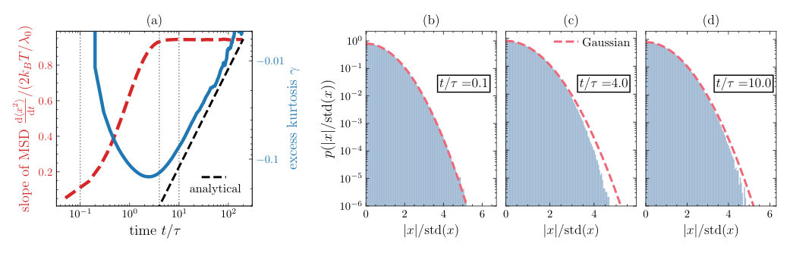
<figcaption class="paper-figure-caption"><b>Fig 2.</b> FIG. 2. Numerical results of integrating Eq. (3) with λ(v) = λ0(1 + αv2) and α = 0.05m/(kBT), using an Euler-Maruyama scheme. (a) Evolution of the slope of the MSD d⟨x2⟩/dt (dashed red line) and the excess kurtosis γ (solid blue line) over time in units of τ = m/λ0. The dashed black line is the analytical prediction from Eq. (13). (b)–(d) Histograms of the displacement distributions p(|x|/std(x)) as a function of overall displacements x normalized by their standard deviation std(x) at the times indicated by vertical dotted lines in (a), in chronological order. Dashed pink lines correspond to Gaussian fits to the data.</figcaption>
</figure>
<figure class="paper-figure-card">
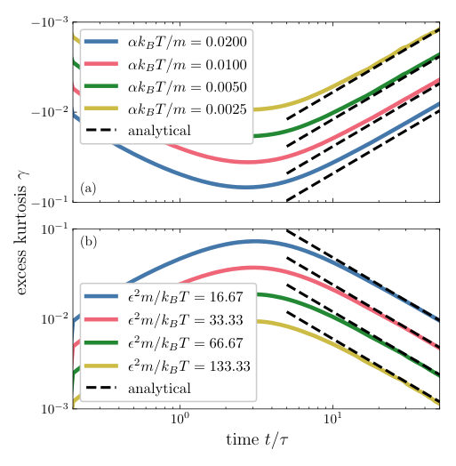
<figcaption class="paper-figure-caption"><b>Fig 3.</b> FIG. 3. Excess kurtosis γ evaluated from numerical simula- tions according to Eq. (3) as a function of time t for different strengths of nonlinear friction. Analytical predictions are in- cluded as black dashed lines following Eq. (13). (a) Results for the friction force according to Eq. (5) and varying values of the rescaled friction parameter ¯α = αkBT/m. (b) Anal- ogous results for the tanh-friction introduced in Eq. (4) and varying values of its strength as set by the parameter ϵ. For comparison with the analytical prediction in Eq. (13) and the results in (a), we use the relation α = −1/(3ϵ2).</figcaption>
</figure>
</div>

<p><strong>Summary.</strong> This work theoretically explains Brownian yet non-Gaussian diffusion (BnGD) by modeling a particle subject to nonlinear friction. The authors show that the specific form of nonlinear drag, when correctly balanced by thermal noise to maintain equilibrium, is sufficient to cause the displacement statistics to deviate from Gaussian predictions at intermediate times. This provides a fundamental physical mechanism for observing non-Gaussianity in otherwise diffusive processes.</p>
<p><strong>Why it may be interesting.</strong> While focused on classical statistical mechanics, the mathematical techniques involving non-equilibrium noise and the analysis of higher-order moments (kurtosis) are highly relevant to open quantum systems where non-Markovian or nonlinear dissipation models are used.</p>
<details>
<summary>Detailed structure</summary>
<p><strong>Main problem.</strong> The paper addresses the physical mechanism behind Brownian yet non-Gaussian diffusion (BnGD), where the mean squared displacement grows linearly (Brownian) but the displacement statistics are non-Gaussian at intermediate times.</p>
<p><strong>Main result.</strong> Nonlinear friction, when coupled with velocity-dependent thermal noise under correct stochastic equilibrium conditions, is sufficient to generate the observed non-Gaussian displacement statistics.</p>
<p><strong>Method.</strong> The analysis uses the Fokker-Planck equation approach, supplemented by systematic perturbative expansions in the nonlinearity parameter, and is validated through numerical simulation of the corresponding Langevin equation.</p>
<p><strong>Model / system.</strong> The model is a 1D stochastic process governed by a Langevin equation incorporating a nonlinear friction function $\lambda(v)$. The system is analyzed under the constraint of stochastic equilibrium.</p>
<p><strong>Key observables.</strong> Mean Squared Displacement (MSD), excess kurtosis ($\gamma$), and the displacement probability distribution (DisD).</p>
<p><strong>Important parameters / regimes.</strong> The nonlinear friction function $\lambda(v)$ (e.g., sublinear or superlinear forms) and the small nonlinearity parameter $\mu$ used in the expansion.</p>
<p><strong>Assumptions / limitations.</strong> The analysis assumes homogeneous environments and relies on perturbative expansions for small nonlinearity parameters ($\mu \ll 1$).</p>
<p><strong>Figures summary.</strong> Figures demonstrate that for both sublinear and superlinear friction, the MSD remains linear while the excess kurtosis decays as $t^{-1}$, and the displacement histograms show non-Gaussianity at intermediate times.</p>
<p><strong>Paper structure.</strong> The paper establishes the theoretical framework using the Fokker-Planck equation, derives the necessary stochastic differential equation (SDE) for simulation, and then presents results showing how specific nonlinear friction forms reproduce the characteristic non-Gaussian crossover behavior.</p>
</details>
<details>
<summary>Abstract</summary>
<p>In Brownian yet non-Gaussian diffusion (BnGD) the mean squared displacement grows linearly in time. However, the displacement statistics do not follow a normal distribution throughout. Typically, they are non-Gaussian at intermediate times, before they cross over to Gaussian in the long-time regime. We demonstrate that nonlinear friction under correctly applied stochastic equilibrium conditions provides an explanation of this phenomenon also for homogeneous environments.</p>
</details>
<p><sub><a href="#top">↑ back to top</a></sub></p>

<p><a id="paper-2608.27330"></a></p>
<h3 id="the-geometry-of-dissipative-complexity-a-levi-type-decomposition-theorem-for-markovian-quantum-dynamics-via-lie-wedges-and-invariant-cones"><a href="http://arxiv.org/abs/2608.27330v1">The Geometry of Dissipative Complexity: A Levi-Type Decomposition Theorem for Markovian Quantum Dynamics via Lie Wedges and Invariant Cones</a></h3>
<p><strong>Authors:</strong> Yibin Wang, Dhara Thakkar<br>
<strong>Type:</strong> theory · <strong>Category:</strong> other · <strong>PDF:</strong> <a href="https://arxiv.org/pdf/2608.27330v1">https://arxiv.org/pdf/2608.27330v1</a><br>
<strong>Analysis basis:</strong> full PDF text, analyzed in chunks
<strong>Topic relevance:</strong> <code>correlated / nonlocal dissipation</code> <strong>3/5</strong> · <code>driven-dissipative phase transition</code> <strong>3/5</strong> · <code>methods for driven-dissipative</code> <strong>3/5</strong> · <code>Keldysh / 2PI / non-Gaussian methods</code> <strong>2/5</strong> · <code>non-equilibrium universality</code> <strong>2/5</strong> · <code>quantum measurements</code> <strong>1/5</strong></p>
<div class="figure-strip-hint">↔ Scroll figures horizontally</div>
<div class="paper-figures-scroll">
<figure class="paper-figure-card">
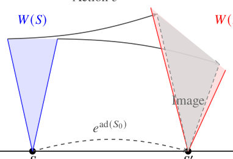
<figcaption class="paper-figure-caption"><b>Fig 1.</b> Figure 1: A schematic of the Fiber Compatibility Condition and the Shear-and-Compensate mechanism. The adjoint action 𝑒ad(𝑋0) moves the base point 𝑆to 𝑆′ and shears the fiber 𝑊(𝑆) (blue) into the dashed image. The FCC compensates by requiring the fiber 𝑊(𝑆′) (red) to contain that sheared image, so the wedge stays admissible under the action.</figcaption>
</figure>
</div>

<p><strong>Summary.</strong> This paper extends classical Lie algebra theory to open quantum systems by introducing the 'Dynamical Lie Wedge' to capture irreversible dissipation. It proves a Levi-Type Decomposition Theorem for this wedge, classifying the system's structure based on its semisimple and solvable components. This provides a rigorous mathematical framework for analyzing quantum control in dissipative environments.</p>
<p><strong>Why it may be interesting.</strong> This work provides a deep mathematical structure for understanding how dissipation fundamentally alters the algebraic description of quantum evolution, offering tools for classifying open quantum control systems.</p>
<details>
<summary>Detailed structure</summary>
<p><strong>Main problem.</strong> To develop a structural classification framework for open quantum systems undergoing Markovian dynamics by extending the classical Levi decomposition from Lie algebras to the geometry of dissipative generators.</p>
<p><strong>Main result.</strong> The authors prove a Levi-Type Decomposition Theorem for dynamical Lie wedges, decomposing the structure into semisimple and solvable components and providing a converse reconstruction.</p>
<p><strong>Method.</strong> The methodology combines Lie algebra theory (Levi decomposition) with convex geometry, utilizing the concept of the Dynamical Lie Wedge (a convex cone) to account for irreversible dissipation.</p>
<p><strong>Model / system.</strong> The focus is on open Markovian quantum systems whose dynamics are governed by Lindbladians, which introduce irreversible directions not captured by standard Lie algebras.</p>
<p><strong>Key observables.</strong> The structure of the dynamical Lie wedge ($\mathcal{W}$), the total dissipation strength, and the classification into four structural types.</p>
<p><strong>Important parameters / regimes.</strong> The dissipation strength, the structure of the solvable radical, and the coupling between semisimple and solvable parts.</p>
<p><strong>Assumptions / limitations.</strong> The core assumption is that the standard Lie algebra approach fails due to dissipation, necessitating the use of the Lie Wedge framework, which is constrained by physical requirements like Complete Positivity.</p>
<p><strong>Figures summary.</strong> Not specified in the notes, but the structure implies diagrams illustrating the decomposition of the wedge into its semisimple and solvable components.</p>
<p><strong>Paper structure.</strong> The paper builds from the known Levi decomposition for closed systems to the necessity of the Lie Wedge for open systems, culminating in the proposed decomposition theorem for the wedge itself, and providing concrete examples of failure (violating CCP) and successful classification.</p>
</details>
<details>
<summary>Abstract</summary>
<p>Lie algebras describe how control Hamiltonians combine in closed quantum systems. In open Markovian systems, however, dissipation introduces irreversible directions that the Lie algebra alone does not retain. A dynamical Lie wedge preserves this information as a convex cone of locally admissible generators. The classical Levi decomposition separates a finite-dimensional Lie algebra into semisimple and solvable parts. In this work, we prove a corresponding decomposition and reconstruction theorem for dynamical Lie wedges.   The theorem decomposes the wedge into semisimple and solvable data, records how these components are coupled, and provides a converse reconstruction of the wedge. The framework yields four structural types of the generated algebra. We further prove that the total dissipation strength of every admissible generator depends only on its coordinate in the solvable radical. In particular, if the generated Lie algebra is semisimple, every admissible generator is Hamiltonian. Together, these results extend Lie-algebraic structural methods to irreversible Markovian control and clarify how dissipation is encoded in the generator geometry.</p>
</details>
<p><sub><a href="#top">↑ back to top</a></sub></p>

<p><a id="paper-2608.26270"></a></p>
<h3 id="time-and-momentum-resolved-tunneling-spectroscopy-of-floquet-dynamics"><a href="http://arxiv.org/abs/2608.26270v1">Time and Momentum Resolved Tunneling Spectroscopy of Floquet dynamics</a></h3>
<p><strong>Authors:</strong> Lucas Q. Silveira, Adrian E. Feiguin<br>
<strong>Type:</strong> theory · <strong>Category:</strong> strongly correlated electrons · <strong>PDF:</strong> <a href="https://arxiv.org/pdf/2608.26270v1">https://arxiv.org/pdf/2608.26270v1</a><br>
<strong>Analysis basis:</strong> full PDF text, analyzed in chunks
<strong>Topic relevance:</strong> <code>analog quantum simulation</code> <strong>3/5</strong> · <code>quantum measurements</code> <strong>3/5</strong> · <code>Keldysh / 2PI / non-Gaussian methods</code> <strong>2/5</strong> · <code>driven-dissipative phase transition</code> <strong>2/5</strong> · <code>methods for driven-dissipative</code> <strong>2/5</strong> · <code>non-equilibrium universality</code> <strong>2/5</strong></p>
<div class="figure-strip-hint">↔ Scroll figures horizontally</div>
<div class="paper-figures-scroll">
<figure class="paper-figure-card">
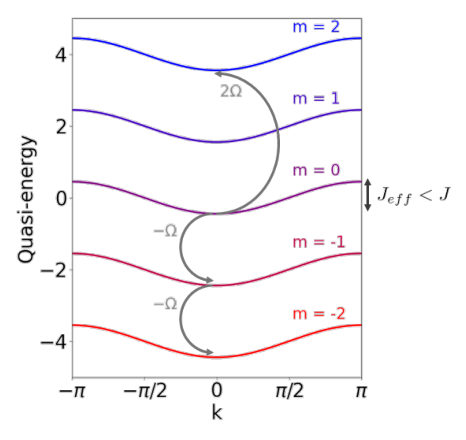
<figcaption class="paper-figure-caption"><b>Fig 1.</b> FIG. 1. Periodically driving the system induces formation of Floquet replicas, due to photon-assisted transitions, and lead to the renormalization of the bandwidth, resulting in a slower propagation of charges.</figcaption>
</figure>
<figure class="paper-figure-card">
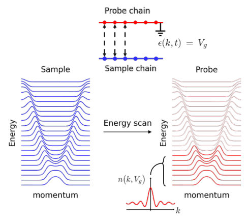
<figcaption class="paper-figure-caption"><b>Fig 2.</b> FIG. 2. A sample subject to a periodic drive is weakly coupled to a non-interacting probe held at bias voltage Vg, where the tunneling amplitude follows a gaussian envelope. The instan- taneous energy spectrum can then be measured by shifting the center of the gaussian envelope, and computing the mo- mentum distribution of the probe at each time step.</figcaption>
</figure>
<figure class="paper-figure-card">
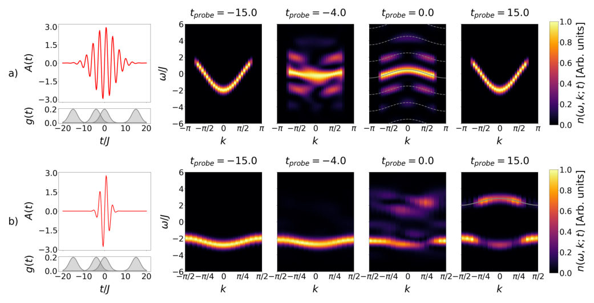
<figcaption class="paper-figure-caption"><b>Fig 3.</b> FIG. 3. Out-of-equilibrium energy spectrum of a periodically driven non-interacting fermionic chain subject to a gaussian pulse A(t) = A0 exp(−t2/2δ2) sin(Ωt). The color scale shows the occupation of the probe as a function of momentum and probing energy at different probing times tprobe. Solid and dashed gray lines indicate the instantaneous energy band and its Floquet replicas, respectively. a) Tight-binding model ∆/J = 0 at three-quarter filling, with (A0, Ω, δ) = (3, 2, 5). b) Ionic model ∆/J = 2 at half-filling, with (A0, Ω, δ) = (3, 2, 2).</figcaption>
</figure>
<figure class="paper-figure-card">
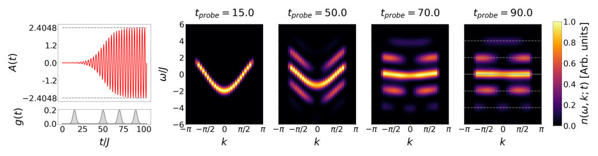
<figcaption class="paper-figure-caption"><b>Fig 4.</b> FIG. 4. Transition to a dynamically localized state for the three-quarter filled tight-binding model ∆/J = 0. The amplitude of the drive is tuned to the first zero of J0(A0) by following the hyperbolic pulse A(t) = A0/2 [1 + tanh ((t −t0)/δ)] sin(Ωt) with (A0, Ω, δ) = (2.40482 . . . , 2, 15). Conventions and color scale as in Fig. 3.</figcaption>
</figure>
<figure class="paper-figure-card">
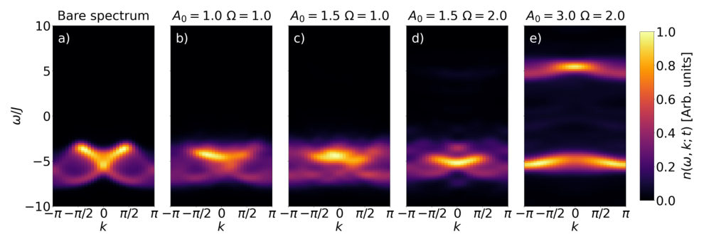
<figcaption class="paper-figure-caption"><b>Fig 5.</b> FIG. 5. Out-of-equilibrium energy spectrum of periodically driven Hubbard model at half-filling with U/J = 10. The color scale shows the occupation of the probe as a function of momentum and probing energy. We set tprobe = tmax/2 = 7.5 and use driving protocol A(t) = A0 sin(Ωt).</figcaption>
</figure>
</div>

<p><strong>Summary.</strong> This work presents a novel time and momentum resolved tunneling spectroscopy method to measure the instantaneous energy spectrum of periodically driven quantum systems. It moves beyond the high-frequency approximation to capture non-adiabatic physics in models ranging from non-interacting chains to strongly correlated Hubbard models. The key finding is the ability to microscopically describe the emergence of novel in-gap states driven by external fields or temperature.</p>
<p><strong>Why it may be interesting.</strong> The technique provides a powerful, non-equilibrium diagnostic tool to measure spectral properties in driven many-body systems, which is crucial for understanding Floquet engineering beyond simple approximations.</p>
<details>
<summary>Detailed structure</summary>
<p><strong>Main problem.</strong> The paper aims to probe the instantaneous energy spectrum of periodically driven quantum systems beyond the simplified high-frequency limit, capturing non-adiabatic effects.</p>
<p><strong>Main result.</strong> The proposed spectroscopy protocol successfully maps the instantaneous energy spectrum, providing a microscopic description for the emergence of in-gap states driven by resonant driving or thermal effects.</p>
<p><strong>Method.</strong> A time and momentum resolved tunneling spectroscopy protocol is introduced, involving weak coupling to a non-interacting probe chain whose occupation is measured as a function of bias voltage.</p>
<p><strong>Model / system.</strong> The study analyzes periodically driven quantum systems, including non-interacting fermionic chains and strongly correlated models like the Hubbard and t-V chains, governed by time-dependent Hamiltonians.</p>
<p><strong>Key observables.</strong> Instantaneous energy spectrum, momentum distribution of the probe, and the emergence of in-gap energy bands ($\epsilon_{DW}(k)$).</p>
<p><strong>Important parameters / regimes.</strong> Driving frequency ($\Omega$), interaction strength ($U, V$), and the coupling strength of the probe ($g_0, \sigma$).</p>
<p><strong>Assumptions / limitations.</strong> The method assumes the probe coupling remains in the perturbative regime, and some analyses rely on the atomic limit ($J=0$) or the strong coupling limit ($J \ll U$).</p>
<p><strong>Figures summary.</strong> Figures illustrate Floquet replicas formed by driving, the schematic setup of the probe coupling, and the resulting spectral weight transfer and in-gap band structure.</p>
<p><strong>Paper structure.</strong> The paper introduces the spectroscopy protocol, benchmarks it on non-interacting models, generalizes it to strongly correlated systems using tDMRG, and provides a detailed microscopic analysis of in-gap state formation via domain wall dynamics.</p>
</details>
<details>
<summary>Abstract</summary>
<p>Periodically driven quantum systems provide a powerful route to engineer novel states of matter by controlling their effective Hamiltonians through external fields. However, most treatments are usually simplified by considering the high-frequency limit, and do not account for the processes taking place in the transient regime during the onset of the drive. In this work, we introduce a time and momentum resolved tunneling spectroscopy protocol to probe the instantaneous energy spectrum of Floquet-driven systems beyond the high-frequency regime, capturing both emergent effects and non-adiabatic phenomena without requiring explicit reconstruction of the full time-dependent Green's function. We benchmark the method on driven non-interacting fermionic models, and then generalize the approach to strongly correlated systems with the aid of time-dependent density matrix renormalization group techniques. We also provide a microscopic description to the emergence of in-gap states under resonant driving, and briefly explore its finite temperature analog.</p>
</details>
<p><sub><a href="#top">↑ back to top</a></sub></p>

<p><a id="paper-2608.26845"></a></p>
<h3 id="energy-ordering-from-nonlinear-quantum-dissipation"><a href="http://arxiv.org/abs/2608.26845v1">Energy Ordering from Nonlinear Quantum Dissipation</a></h3>
<p><strong>Authors:</strong> Alireza Ataei, Olle Eriksson, Vahid Azimi-Mousolou<br>
<strong>Type:</strong> theory · <strong>Category:</strong> other · <strong>PDF:</strong> <a href="https://arxiv.org/pdf/2608.26845v1">https://arxiv.org/pdf/2608.26845v1</a><br>
<strong>Analysis basis:</strong> full PDF text, analyzed in chunks
<strong>Topic relevance:</strong> <code>driven-dissipative phase transition</code> <strong>3/5</strong> · <code>methods for driven-dissipative</code> <strong>3/5</strong> · <code>non-equilibrium universality</code> <strong>2/5</strong> · <code>Keldysh / 2PI / non-Gaussian methods</code> <strong>1/5</strong> · <code>analog quantum simulation</code> <strong>1/5</strong> · <code>correlated / nonlocal dissipation</code> <strong>1/5</strong> · <code>quantum measurements</code> <strong>1/5</strong> · <code>scars &amp; prethermalization</code> <strong>1/5</strong></p>
<div class="figure-strip-hint">↔ Scroll figures horizontally</div>
<div class="paper-figures-scroll">
<figure class="paper-figure-card">
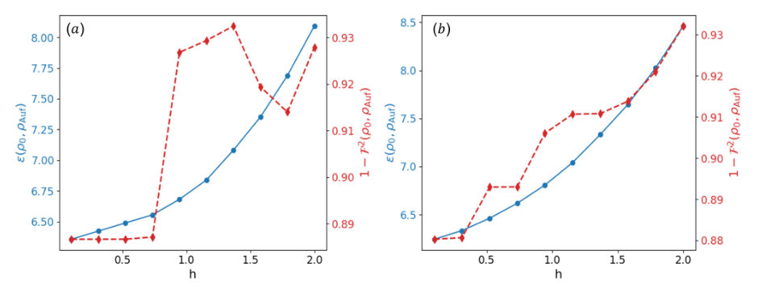
<figcaption class="paper-figure-caption"><b>Fig 1.</b> FIG. 1: Infidelity and residual energy error between the initial random state and the Aufbau state as a function of magnetic field strength h. The residual energy error and h are expressed in units of J and J/µ, respectively, while the infidelity is dimensionless.</figcaption>
</figure>
<figure class="paper-figure-card">
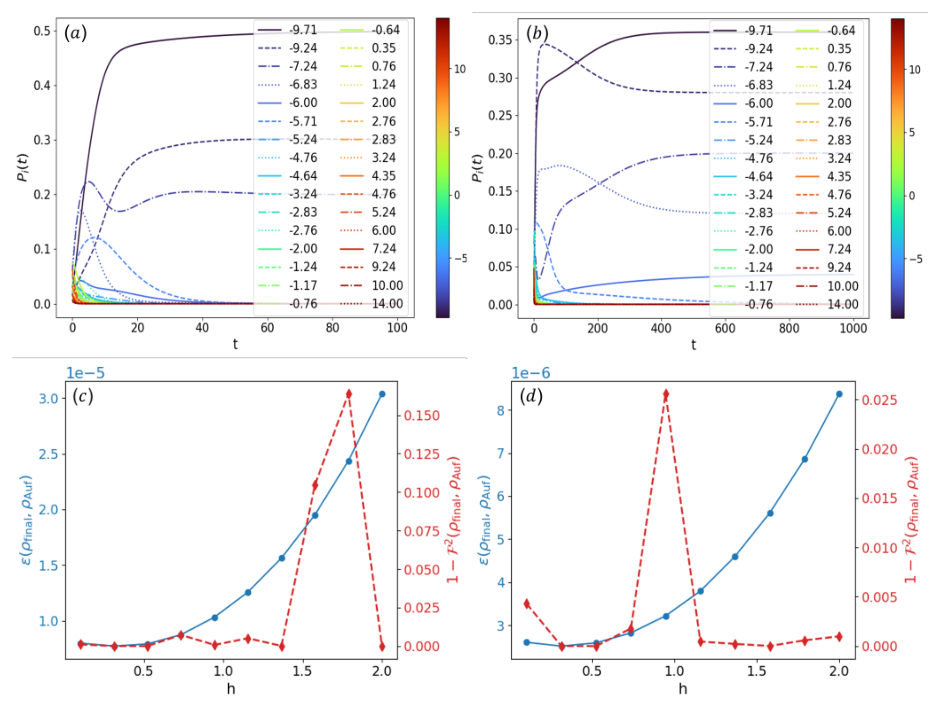
<figcaption class="paper-figure-caption"><b>Fig 2.</b> FIG. 2: Numerical simulations of QLLG dynamics converging to the Aufbau state for a five-spin Heisenberg chain. Panels (a) and (b) show the probability energy-level populations Pi(t) for rank-3 and rank-5 initial mixed states, respectively, at h = 2. In each panel, the line styles and colors identify the corresponding energy eigenvalues, as indicated in the legend. Panels (c) and (d) show the residual energy error, normalized by the exchange interaction J, and the infidelity between the final QLLG state and the Aufbau state as functions of the transverse field h. The magnetic field h and time t are expressed in units of J/µ and ℏ/J, respectively.</figcaption>
</figure>
</div>

<p><strong>Summary.</strong> This theoretical paper demonstrates that energy ordering, analogous to the Aufbau principle, can emerge dynamically in quantum many-body systems solely due to nonlinear quantum dissipation. By analyzing the QLLG dynamics, the authors prove that the system naturally relaxes to a unique, low-energy configuration. This offers a fundamental, non-principle-based route for selectively preparing quantum states.</p>
<p><strong>Why it may be interesting.</strong> This work provides a non-Hamiltonian, dissipative mechanism for achieving quantum organization, which is highly relevant for understanding open quantum systems and state preparation protocols.</p>
<details>
<summary>Detailed structure</summary>
<p><strong>Main problem.</strong> The paper addresses the fundamental question of the dynamical mechanism by which a generic quantum state spontaneously develops an energy hierarchy, mimicking the Aufbau principle.</p>
<p><strong>Main result.</strong> The energy ordering emerges intrinsically under nonlinear quantum dissipation (QLLG dynamics), driving the system toward a unique, low-energy asymptotic state diagonal in the energy eigenbasis.</p>
<p><strong>Method.</strong> The analysis combines analytical proofs using Lyapunov functionals and stability arguments with numerical simulations of the QLLG master equation.</p>
<p><strong>Model / system.</strong> The system is modeled using the quantum Landau-Lifshitz-Gilbert (QLLG) dynamics applied to a Heisenberg spin-1/2 chain Hamiltonian. The evolution is governed by a non-Hermitian-like master equation.</p>
<p><strong>Key observables.</strong> Population probabilities $P_i(t)$, residual energy error, and quantum fidelity relative to the ordered state $
ho_{    ext{Auf}}$.</p>
<p><strong>Important parameters / regimes.</strong> The damping parameter $\kappa$, the system size $N$, and the energy gaps between eigenstates.</p>
<p><strong>Assumptions / limitations.</strong> The analysis assumes the existence of a decreasing energy functional $V(
ho)$ and focuses on generic finite-rank mixed quantum states.</p>
<p><strong>Figures summary.</strong> Figures show the convergence of population probabilities $P_i(t)$ towards an ordered state and the decay of residual energy error and infidelity as the system relaxes.</p>
<p><strong>Paper structure.</strong> The paper establishes the problem, derives the QLLG dynamics, proves analytically that the system minimizes an energy functional leading to an energy-ordered state, and confirms this convergence via numerical simulations.</p>
</details>
<details>
<summary>Abstract</summary>
<p>Energy-ordered occupation is deeply embedded in quantum physics, from the Aufbau principle governing the filling of electronic states in atoms and molecules to the emergence of low-energy configurations in quantum many-body systems. However, the dynamical mechanism by which a generic quantum state develops such an energy hierarchy remains a fundamental question. Here we show that such an energy hierarchy can emerge dynamically from nonlinear quantum dissipation. Rather than being imposed as a principle or generated through coupling to a thermal reservoir, an Aufbau-like ordering of energy levels emerges intrinsically under quantum Landau-Lifshitz-Gilbert dynamics from a generic initial mixed state. This convergence is a nontrivial consequence of Lyapunov monotonicity and instability of disordered population configurations. The resulting dynamics establish an intrinsic nonlinear mechanism for organizing density-matrix populations and provides a route toward selective preparation of low-energy subspaces. Numerical simulations confirm analytical predictions and illustrate convergence toward low-energy sectors.</p>
</details>
<p><sub><a href="#top">↑ back to top</a></sub></p>

<p><a id="paper-2608.26482"></a></p>
<h3 id="strong-coupling-of-the-mo-mo-stretching-mode-to-a-locally-confined-stokes-raman-field-in-mo2-molecular-resonators"><a href="http://arxiv.org/abs/2608.26482v1">Strong Coupling of the Mo Mo Stretching Mode to a Locally Confined Stokes Raman Field in Mo2 Molecular Resonators</a></h3>
<p><strong>Authors:</strong> Miao Meng, Ying Ning Tan, Guang Yuan Zhu, Chun Y. Liu<br>
<strong>Type:</strong> experiment · <strong>Category:</strong> other · <strong>PDF:</strong> <a href="https://arxiv.org/pdf/2608.26482v1">https://arxiv.org/pdf/2608.26482v1</a><br>
<strong>Analysis basis:</strong> full PDF text, analyzed in chunks
<strong>Topic relevance:</strong> <code>Tavis-Cummings &amp; cavity-many-emitter</code> <strong>3/5</strong> · <code>quantum optics experiment</code> <strong>3/5</strong> · <code>driven-dissipative phase transition</code> <strong>2/5</strong> · <code>analog quantum simulation</code> <strong>1/5</strong> · <code>correlated / nonlocal dissipation</code> <strong>1/5</strong> · <code>interference shaping light</code> <strong>1/5</strong> · <code>methods for driven-dissipative</code> <strong>1/5</strong> · <code>quantum measurements</code> <strong>1/5</strong></p>
<div class="figure-strip-hint">↔ Scroll figures horizontally</div>
<div class="paper-figures-scroll">
<figure class="paper-figure-card">
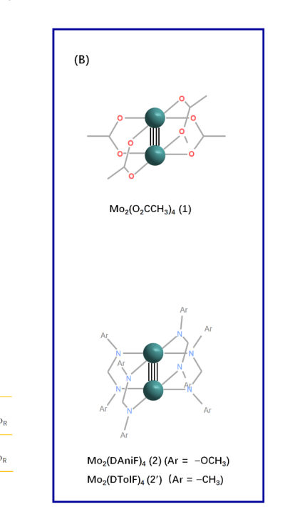
<figcaption class="paper-figure-caption"><b>Fig 1.</b> Figure 1. Molecular system and proposed vibration–field coupling framework. (A)</figcaption>
</figure>
<figure class="paper-figure-card">
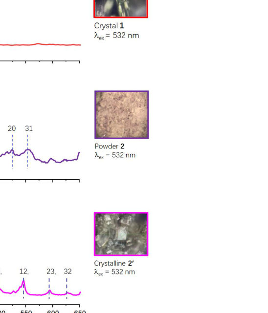
<figcaption class="paper-figure-caption"><b>Fig 2.</b> Figure 2. Raman spectra of Mo₂(O₂CCH₃)₄ (1), Mo₂(DAniF)₄ (2), and Mo₂(DTolF)₄ (2′)</figcaption>
</figure>
<figure class="paper-figure-card">
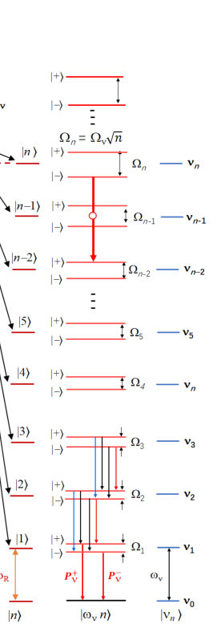
<figcaption class="paper-figure-caption"><b>Fig 3.</b> Figure 3. Effective dressed-state ladder for coupling of the Mo–Mo stretching vibration</figcaption>
</figure>
<figure class="paper-figure-card">
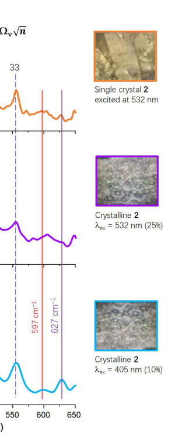
<figcaption class="paper-figure-caption"><b>Fig 4.</b> Figure 4 ．Multiplicity and reproducibility of Mollow-type Raman sidebands in</figcaption>
</figure>
</div>

<p><strong>Summary.</strong> The authors demonstrate strong coupling between the $  ext{Mo–Mo}$ stretching vibration and a locally confined Raman field within $    ext{Mo}_2$ molecular complexes. By analyzing spectral features like Mollow sidebands, they confirm that the $   ext{Mo}_2$ unit functions as an intrinsic molecular resonator. This establishes a new platform for observing cavity-free light-matter interaction in molecular systems.</p>
<p><strong>Why it may be interesting.</strong> This work provides spectroscopic evidence for cavity-free light-matter coupling, extending concepts from engineered nanophotonics into the realm of molecular quantum optics, which is highly relevant to AMO physics.</p>
<details>
<summary>Detailed structure</summary>
<p><strong>Main problem.</strong> To determine if a chemically defined molecular structure can intrinsically generate, confine, and enhance a local scattering field sufficiently to achieve coherent coupling with one of its own characteristic vibrations, moving beyond externally fabricated cavities.</p>
<p><strong>Main result.</strong> The $  ext{Mo}_2$ unit acts as an intrinsic molecular optical resonator, exhibiting strong coupling between the $  ext{Mo–Mo}$ stretching vibration and the locally confined Raman field, evidenced by Rabi-type splitting and Mollow-type sidebands.</p>
<p><strong>Method.</strong> Raman spectroscopy measurements on single crystals and powders of $ ext{Mo}_2$ complexes, analyzing spectral features like sideband displacements and splitting patterns.</p>
<p><strong>Model / system.</strong> The system is modeled using a Jaynes-Cummings-type coupling Hamiltonian, treating the $ ext{Mo}_2$ unit as both the Raman-active oscillator and the molecular resonator supporting the local field.</p>
<p><strong>Key observables.</strong> Rabi-type splitting, Mollow-type sidebands, and sideband displacements following the photon-number-dependent relation $\Omega_n = \Omega_
u \sqrt{n}$.</p>
<p><strong>Important parameters / regimes.</strong> $   ext{Mo–Mo}$ stretching frequency ($\omega_
u \approx 400   ext{ cm}^{-1}$); coupling strength ($g$); photon number index ($n$).</p>
<p><strong>Assumptions / limitations.</strong> The $    ext{Mo}_2$ unit acts as a highly confining, enhancing optical resonator, allowing for the description via a quantized field model.</p>
<p><strong>Figures summary.</strong> Figures compare spectra of different $ ext{Mo}_2$ complexes, showing a single band for the less polarizable complex and structured sidebands/splitting for the more polarizable ones.</p>
<p><strong>Paper structure.</strong> The paper progresses by first establishing the need for intrinsic field confinement, then applying the JC coupling model to interpret observed sidebands, and finally reanalyzing historical data to confirm the model's applicability across different $  ext{Mo}_2$ complexes.</p>
</details>
<details>
<summary>Abstract</summary>
<p>Confining optical fields to molecular dimensions is a central objective in nanophotonics and molecular quantum optics. Here, we report strong coupling of the Mo Mo stretching vibration to a locally confined Raman scattering field in quadruply bonded dimolybdenum complexes. Under ambient, cavity-free conditions, the dimolybdenum formamidinate complexes Mo2(DAniF)4 and Mo2(DTolF)4 exhibit Rabi-type splitting, Mollow-type sidebands, and higher-order Raman features centered near the Mo Mo stretching frequency of 400 cm-1, indicating formation of dressed vibration field states. The sideband displacements from the resonance follow the photon-number-dependent relation Ωn=Ωνn, consistent with Jaynes Cummings-type coupling, while strongly displaced Raman features are assigned to leapfrog transitions within the same dressed-state ladder. In contrast, the less polarizable Mo2(O2CCH3)4 complex exhibits essentially a single Mo Mo stretching band. Reanalysis of reported resonance Raman spectra of an alkynyl Mo2 complex further supports this coupling framework. These results suggest that the Mo2 unit simultaneously serves as the Raman active oscillator and the molecular resonator that supports, confines, and enhances the locally generated scattering field, providing spectroscopic evidence for vibration field coupling and optical-field confinement within a chemically defined metal metal bond.</p>
</details>
<p><sub><a href="#top">↑ back to top</a></sub></p>

<p><a id="paper-2608.26702"></a></p>
<h3 id="topologically-protected-perfect-crossed-andreev-reflection-in-flux-engineered-quantum-wire-junctions"><a href="http://arxiv.org/abs/2608.26702v1">Topologically protected perfect crossed Andreev reflection in flux-engineered quantum wire junctions</a></h3>
<p><strong>Authors:</strong> Abhiram Soori<br>
<strong>Type:</strong> theory · <strong>Category:</strong> other · <strong>PDF:</strong> <a href="https://arxiv.org/pdf/2608.26702v1">https://arxiv.org/pdf/2608.26702v1</a><br>
<strong>Analysis basis:</strong> full PDF text, analyzed in chunks
<strong>Topic relevance:</strong> <code>Full counting statistics</code> <strong>3/5</strong> · <code>Keldysh / 2PI / non-Gaussian methods</code> <strong>2/5</strong> · <code>analog quantum simulation</code> <strong>2/5</strong> · <code>quantum measurements</code> <strong>2/5</strong> · <code>correlated / nonlocal dissipation</code> <strong>1/5</strong> · <code>driven-dissipative phase transition</code> <strong>1/5</strong> · <code>methods for driven-dissipative</code> <strong>1/5</strong> · <code>non-equilibrium universality</code> <strong>1/5</strong></p>
<div class="figure-strip-hint">↔ Scroll figures horizontally</div>
<div class="paper-figures-scroll">
<figure class="paper-figure-card">
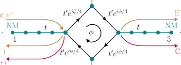
<figcaption class="paper-figure-caption"><b>Fig 1.</b> FIG. 1. Schematic of the flux-tuned junction. Two normal wires (1, 3) and two superconducting wires (2, 4) are coupled via a central square lattice threaded by a ϕ-flux. For an elec- tron incident from wire 1, destructive interference at ϕ = π completely suppresses both ET and AR. Tuning the lattice hopping to t′ ≃t/ √</figcaption>
</figure>
<figure class="paper-figure-card">

<figcaption class="paper-figure-caption"><b>Fig 2.</b> FIG. 2. Giant enhancement of crossed Andreev reflection. (a) The logarithmic nonlocal conductance, η = log[1 + GRLh/(2e2)], versus magnetic flux ϕ at zero bias for various junction hoppings t′/t (shown in the legend). (b) Dependence of η on bias voltage V and hopping t′ at ϕ = π. Parameters are µ = −t, ∆= 0.01t, and ϵ0 = 0.6∆.</figcaption>
</figure>
<figure class="paper-figure-card">

<figcaption class="paper-figure-caption"><b>Fig 3.</b> FIG. 4. Cross-correlation shot noise S13 between the nor- mal terminals as a function of the applied flux ϕ at a small bias voltage V near zero energy for various hopping ratios t′/t. The strictly positive noise near ϕ = π (green shaded region) is a feature of CAR-dominated Cooper-pair splitting. Notably, for the optimal hopping t′ = 0.7051t, the noise vanishes com- pletely at ϕ = π, reflecting the deterministic, fluctuation-free nature of perfect CAR (PCAR = 1). Conversely, the brown shaded regions denote the ET-dominated regime. Parameters are the same as in Fig. 2.</figcaption>
</figure>
<figure class="paper-figure-card">

<figcaption class="paper-figure-caption"><b>Fig 4.</b> FIG. 3. Topological protection of perfect CAR. (a) Map of η versus ϵ0 and t′ at zero bias. The phase winding of the electron reflection (ER) amplitude along the indicated closed loop yields W = 1, topologically guaranteeing a zero of ER (perfect CAR) within the enclosed region. (b) Trajectory of the perfect CAR condition in the (E, ϵ0, t′) parameter space. Other parameters are the same as in Fig. 2.</figcaption>
</figure>
<figure class="paper-figure-card">

<figcaption class="paper-figure-caption"><b>Fig 5.</b> FIG. 5. Robustness of CAR-dominated non-local conduc- tance under structural and chemical potential fluctuations. (a,b) Bond disorder with hoppings in the range [t′ −δt′/2, t′ + δt′/2]. (a) Bias dependence of GRL at fixed bond disorder amplitude δt′ = 0.2t near t′ = 0.706t. (b) GRL versus bond disorder strength δt′ at zero bias. (c,d) Onsite disorder with site energies in [−δϵ/2, δϵ/2]. (c) Bias dependence of GRL at fixed onsite disorder amplitude δϵ = 0.2t. (d) GRL versus onsite disorder strength δϵ at zero bias. Solid lines denote configuration averages (over 250 realizations) and shaded re- gions represent standard deviation. The fixed parameters are identical to those in Fig. 2.</figcaption>
</figure>
</div>

<p><strong>Summary.</strong> This work proposes a novel, flux-tunable quantum junction architecture that achieves perfect Crossed Andreev Reflection (CAR) by engineering destructive quantum interferences at $\phi=\pi$. The authors use topological theory and cross-correlation shot noise measurements to prove that this perfect, non-local entanglement generation is robust and fundamentally protected against disorder.</p>
<p><strong>Why it may be interesting.</strong> The use of topological invariants (winding number) to guarantee a physical transport property (perfect CAR) provides a powerful, robust design principle for quantum devices, which is highly relevant to open quantum systems engineering.</p>
<details>
<summary>Detailed structure</summary>
<p><strong>Main problem.</strong> The core challenge is to isolate and deterministically generate non-locally entangled electron pairs via Crossed Andreev Reflection (CAR) in solid-state systems, separating it from competing processes like electron tunneling (ET) and local Andreev reflection (AR).</p>
<p><strong>Main result.</strong> The authors demonstrate that at exactly half a magnetic flux quantum ($\phi = \pi$), a specific flux-tunable junction achieves 100% efficient, topologically protected CAR, confirmed by a strictly positive cross-correlation shot noise signature.</p>
<p><strong>Method.</strong> The analysis combines theoretical modeling using a tight-binding Hamiltonian with advanced mathematical tools, specifically the Cauchy argument principle, to prove topological protection.</p>
<p><strong>Model / system.</strong> The system is a flux-tunable four-terminal normal metal-superconductor junction, modeled by a central square lattice threaded by a magnetic flux $\phi$. The Hamiltonian describes hopping amplitudes and superconducting pairing.</p>
<p><strong>Key observables.</strong> Nonlocal differential conductance ($G_{RL}$), cross-correlation shot noise ($S_{13}$), and the topological winding number ($W$).</p>
<p><strong>Important parameters / regimes.</strong> The critical flux value $\phi = \pi$, the superconducting gap ($\Delta$), and the ratio of hopping amplitudes ($t'/t$).</p>
<p><strong>Assumptions / limitations.</strong> The proof relies on the Cauchy argument principle to guarantee the topological protection of the perfect CAR state, and the analysis assumes the system can be modeled by a tight-binding lattice.</p>
<p><strong>Figures summary.</strong> Figures illustrate the mechanism of interference suppression at $\phi=\pi$, show the quantized topological winding number ($W=1$), and confirm the unique positive cross-correlation shot noise signature ($S_{13}$) at this flux.</p>
<p><strong>Paper structure.</strong> The paper first establishes the physical problem and the Hamiltonian. It then calculates key observables like $G_{RL}$ and $S_{13}$. The core of the work uses topological arguments (Cauchy principle) to prove the existence of perfect CAR, followed by demonstrating its robustness against disorder.</p>
</details>
<details>
<summary>Abstract</summary>
<p>Generating non-locally entangled electron pairs via Cooper-pair splitting is vital for solid-state quantum information processing. However, isolating the underlying crossed Andreev reflection (CAR) is challenging due to competing transport processes like electron tunneling (ET) and local Andreev reflection (AR). Here, we propose a flux-tunable four-terminal normal metal-superconductor junction that achieves deterministic, 100\% efficient CAR. We demonstrate that at exactly half a magnetic flux quantum ($φ=π$), exact destructive Aharonov-Bohm and Peierls interferences structurally forbid ET and AR respectively. By tuning the central junction hopping, electron reflection is also suppressed to zero. Using the Cauchy argument principle, we prove that this suppression manifests as a quantized topological winding number, guaranteeing a topologically protected unit CAR probability. We establish that this regime is characterized by a strictly positive cross-correlation shot noise, providing an unambiguous experimental signature of Cooper-pair splitting. Furthermore, this perfect CAR is nearly broadband within the superconducting gap and remarkably robust against structural disorder, offering a highly resilient architecture for deterministic nonlocal entanglement generation.</p>
</details>
<p><sub><a href="#top">↑ back to top</a></sub></p>

<p><a id="paper-2608.27337"></a></p>
<h3 id="dynamics-based-nonclassicality-witness-under-dissipative-dynamics"><a href="http://arxiv.org/abs/2608.27337v1">Dynamics-based nonclassicality witness under dissipative dynamics</a></h3>
<p><strong>Authors:</strong> Nguyen Vu Khoi Huynh, Nicky Nel Narido Labayna, Martine Schut, Valerio Scarani<br>
<strong>Type:</strong> theory · <strong>Category:</strong> other · <strong>PDF:</strong> <a href="https://arxiv.org/pdf/2608.27337v1">https://arxiv.org/pdf/2608.27337v1</a><br>
<strong>Analysis basis:</strong> full PDF text, analyzed in chunks
<strong>Topic relevance:</strong> <code>driven-dissipative phase transition</code> <strong>3/5</strong> · <code>methods for driven-dissipative</code> <strong>3/5</strong> · <code>Keldysh / 2PI / non-Gaussian methods</code> <strong>2/5</strong> · <code>non-equilibrium universality</code> <strong>2/5</strong> · <code>correlated / nonlocal dissipation</code> <strong>1/5</strong> · <code>quantum measurements</code> <strong>1/5</strong></p>
<div class="figure-strip-hint">↔ Scroll figures horizontally</div>
<div class="paper-figures-scroll">
<figure class="paper-figure-card">

<figcaption class="paper-figure-caption"><b>Fig 1.</b> Figure 1: Phase space evolution of an initial Dirac. The point/star indicates the three equally spaced measurement points. The figure gives an intuitive understanding of how, for each of the three noise models, the dissipation affects the probability of finding the particle in {x &gt; 0}, showing that the classical score can change under dissipative dynamics. For pure dephasing (Section V) there is angular diffusion, for thermal relaxation (Section III) and in the Caldeira-Leggett model (Section IV) the trajectory in-spirals and the state’s variance increases until it thermalizes.</figcaption>
</figure>
<figure class="paper-figure-card">

<figcaption class="paper-figure-caption"><b>Fig 2.</b> Figure 2: Score thresholds for the thermal relaxation channel at kBT/ℏω0 = 0, 1, 10 (colour). It compares the quantum maximum Pth qm = λmax( ˆS) (thick solid, (33)) against (a) the Wigner positivity bound Pth wp (dashed, (8)) and (b) against the Dirac bound Pth cl (dash-dotted, (24)).</figcaption>
</figure>
<figure class="paper-figure-card">

<figcaption class="paper-figure-caption"><b>Fig 3.</b> Figure 2 compares the noise-dependent quantum max- imum Pqm(γ0) = λmax( ˆS) versus the classical bound Pcl(γ0), and the Wigner positivity bound Pwp. As dis- cussed in Section III A, the conservative Dirac bound Pcl(γ0) jumps discretely to ≈0.6943 (25) and sits just below the noiseless optimum Pqm(0) ≈0.709, so the certifiable region Pqm &gt; Pcl closes rapidly. The cer- tifiable region boundary γ⋆ 0/ω0 (Section II D), which is the crossing point of the two curves, lies at 1.22 × 10−2, 5.95×10−3 and 6.72×10−4 for kBT/ℏω0 = 0, 1 and 10, re- spectively. The scale-aware Wigner positivity bound, by contrast, leaves 2/3 continuously, so the certifiable region for Wigner negativity using our Wigner...</figcaption>
</figure>
<figure class="paper-figure-card">

<figcaption class="paper-figure-caption"><b>Fig 4.</b> Figure 3: Score thresholds for the Caldeira-Leggett channel at kBT/ℏω0 = 10, 20, 40 (colour). It compares the quantum maximum Pqm = λmax( ˆS) (thick solid, (41)) against (a) the Wigner positivity bound Pwp (dashed, (8)) and (b) against the temperature-independent Dirac bound Pcl (dash-dotted, (38)).</figcaption>
</figure>
<figure class="paper-figure-card">

<figcaption class="paper-figure-caption"><b>Fig 5.</b> Figure 4: Quantum maximum score (Pqm) and Dirac- delta bound (which coincides with the exact Wigner pos- itivity bound in this case Pcl = Pwp,e = Pwp) for the pure dephasing channel</figcaption>
</figure>
</div>

<p><strong>Summary.</strong> This paper extends a dynamics-based test for quantum nonclassicality to account for environmental dissipation in harmonic oscillators. Using the Wigner formalism, the authors derive how dissipation shifts the classical bounds, providing quantitative thresholds for when quantum features can still be certified despite noise. This is crucial for interpreting experimental results in realistic quantum systems.</p>
<p><strong>Why it may be interesting.</strong> This work is highly relevant to open quantum systems and quantum optics, providing rigorous theoretical tools to quantify quantum resources (nonclassicality) in realistic, noisy experimental settings.</p>
<details>
<summary>Detailed structure</summary>
<p><strong>Main problem.</strong> The paper addresses how to certify quantum nonclassicality in continuous-variable systems when the system dynamics are corrupted by environmental dissipation, which violates the assumption of isolation.</p>
<p><strong>Main result.</strong> The introduction of dissipation necessitates a 'dissipation-dependent shift' in the classical bound, allowing the authors to derive updated thresholds for nonclassicality witnesses across various noise models.</p>
<p><strong>Method.</strong> The analysis employs the Moyal-Wigner formalism in phase space to extend Tsirelson's dynamics-based test to include thermal relaxation, pure dephasing, and the Caldeira-Leggett model.</p>
<p><strong>Model / system.</strong> The physical system is a harmonic oscillator whose dynamics are governed by a Lindblad master equation, which is mapped onto a Fokker-Planck equation for the Wigner function.</p>
<p><strong>Key observables.</strong> The protocol score $S$, the classical bound $P_{cl}$, and the Wigner positivity bound $P_{wp}$ are the key diagnostics used to certify nonclassicality.</p>
<p><strong>Important parameters / regimes.</strong> Dissipation rates ($\gamma_0$), thermal occupation number ($ar{n}$), and frequency uncertainty ($\delta$) are crucial parameters defining the noise regimes.</p>
<p><strong>Assumptions / limitations.</strong> The analysis assumes the validity of the Wigner function approach and relies on taking limits (e.g., $\gamma_0 	o 0^+$) to characterize the behavior of the classical bounds.</p>
<p><strong>Figures summary.</strong> Figures illustrate the phase space evolution and show the calculated certification thresholds ($P_{wp}$ and $P_{cl}$) for the thermal relaxation channel as a function of noise strength and frequency uncertainty.</p>
<p><strong>Paper structure.</strong> The paper first introduces the general dynamics-based protocol, then analyzes the specific cases of thermal relaxation, dephasing, and the Caldeira-Leggett model sequentially, deriving updated bounds for each.</p>
</details>
<details>
<summary>Abstract</summary>
<p>A dynamics-based test, originally proposed by Tsirelson for the harmonic oscillator, provides a method for certifying quantumness under the assumption of a known Hamiltonian. These tests, however, are typically proposed for isolated systems, an assumption that breaks down in experimental implementation. In this paper, we extend the protocol to the harmonic oscillator coupled to standard models of dissipation: thermal relaxation, pure dephasing, and the Caldeira--Leggett model. Using the Moyal-Wigner formalism of quantum mechanics in phase space, we show that the introduction of dissipation requires a dissipation-dependent shift of the classical bound, and provide the threshold under which the nonclassicality witness retains its validity.</p>
</details>
<p><sub><a href="#top">↑ back to top</a></sub></p>

<p><a id="paper-2608.26784"></a></p>
<h3 id="measuring-the-srmath305math-5smath306math-lande-math307math-factor-using-singlet-triplet-oscillations-in-a-circular-rydberg-state-of-strontium"><a href="http://arxiv.org/abs/2608.26784v1">Measuring the Sr$^+$ 5s$_{1/2}$ Landé $g$-factor Using Singlet-Triplet Oscillations in a Circular Rydberg State of Strontium</a></h3>
<p><strong>Authors:</strong> Baptiste Muraz, Mathis Pepin, Corentin Guimard, Michel Brune, Brice Bakkali-Hassani, Sébastien Gleyzes<br>
<strong>Type:</strong> experiment · <strong>Category:</strong> other · <strong>PDF:</strong> <a href="https://arxiv.org/pdf/2608.26784v1">https://arxiv.org/pdf/2608.26784v1</a><br>
<strong>Analysis basis:</strong> full PDF text, analyzed in chunks
<strong>Topic relevance:</strong> <code>Rydberg arrays</code> <strong>3/5</strong> · <code>analog quantum simulation</code> <strong>3/5</strong> · <code>quantum measurements</code> <strong>3/5</strong> · <code>QC/QI experiment</code> <strong>2/5</strong> · <code>quantum optics experiment</code> <strong>1/5</strong></p>
<div class="figure-strip-hint">↔ Scroll figures horizontally</div>
<div class="paper-figures-scroll">
<figure class="paper-figure-card">

<figcaption class="paper-figure-caption"><b>Fig 1.</b> Figure 1. (a) Scheme of the experimental setup. Six gilded electrodes control the electric field at the position of the atoms. For clarity, only half of the front and right elec- trodes are shown. The electrodes along the y axis include ITO-coated lenses (NA = 0.28), one of which focuses an in- coming 532 nm laser beam (green) into an array of 49 gaus- sian tweezers (900-µm waist). Rydberg excitation is achieved using three laser beams at wavelengths of 461 nm (vertical, blue), 767 nm (vertical, red) and 896 nm (horizontal, pink). A σ−polarized rf field at 250 MHz is generated via the elec- trodes in the horizontal plane. Rydberg atoms are ionized by applying a large electric field across...</figcaption>
</figure>
<figure class="paper-figure-card">

<figcaption class="paper-figure-caption"><b>Fig 2.</b> Figure 2. (a) Experimental sequence. The sequence is iden- tical to that of Fig 1(a) until the end of twait, after which we apply a decircularization sequence (time-reversal of the circu- larization sequence). After decircularization, the tweezers are briefly switched off and the atoms are transferred back to the ground state using a short 896 nm laser pulse, before a large electric field ionizes the remaining Rydberg atoms. (b) Aver- aged number of atoms detected over all traps as a function of twait for different tweezer powers PRyd [squares: 0.94(3) mW, disks: 1.35(4) mW, triangles: 1.77(5) mW]. The solid lines are fits to the expression N(t) = e−t/t1[Ae−t/t2 sin(2πνt + ϕ0) + y1] where...</figcaption>
</figure>
<figure class="paper-figure-card">

<figcaption class="paper-figure-caption"><b>Fig 3.</b> Figure 3. (a) Experimental sequence. The tweezers are not switched back on during twait (except shortly for B0 &lt; 0, dotted green, see Appendix A). To detect the atoms, we col- lect their fluorescence immediately after transferring the sin- glet circular states back to the ground state. (b) Spin oscil- lations recorded for n = 51 without trapping the Rydberg atoms, for different values of B0 [squares: −3.130(1) G, disks: 0.272(1) G, diamonds: 3.160(1) G, triangles: 6.280(1) G]. The differences in amplitude between the different datasets result from variations in laser excitation efficiency. The points are experimental with statistical error bars, and the solid lines is a fit to the same...</figcaption>
</figure>
<figure class="paper-figure-card">

<figcaption class="paper-figure-caption"><b>Fig 4.</b> Figure 4. (a) Values of νso(n) for n ranging from 49 to 53. The points correspond to the intercepts of the linear fits in Fig. 3(b) with statistical error bars. The solid line is the theo- retical value (no free parameter). (b) Measurement of δg. The points are the slope of each individual fits of Fig. 3(b) with statistical error bars, while the solid line shows the result of a global fit of data of Fig. 3(b) with δg as a shared parame- ter. The red-shaded area shows the statistical error bar of the global fit. (c) Measured g-factors of different alkali-like ions [33], with the free-electron value shown as the blue dashed line. This work is shown in red.</figcaption>
</figure>
<figure class="paper-figure-card">

<figcaption class="paper-figure-caption"><b>Fig 5.</b> Figure 5. (a) Schematic of the main high-angular momentum Rydberg energy levels involved in the experiment sorted by mℓ. (b) State purification sequence: after selectively trans- ferring the circular atoms from n = 52 to n = 51 with a microwave pulse, a sequence of radio-frequency pulses at 250 MHz brings the remaining high-ℓstates in n = 52 down to low-angular-momentum states. A DC electric field is then ramped to a large value to ionize these low-ℓstates, while leaving 51c unaffected. (c) Number of ions detected with the channeltron as a function of the ionization field. Each point corresponds to a 20 µs detection window in the arrival time centered around the corresponding ionization...</figcaption>
</figure>
</div>

<p><strong>Summary.</strong> The researchers measured the Landé g-factor of the $   ext{Sr}^+$ $5s_{1/2}$ core electron by studying singlet-triplet spin oscillations in circular Rydberg states. They trapped these states using optical tweezers and observed the spin dynamics by monitoring population decay. This provided a first high-precision determination of the core's g-factor, advancing quantum metrology using alkaline-earth atoms.</p>
<p><strong>Why it may be interesting.</strong> This work provides a high-precision quantum measurement of an atomic property ($g$-factor) using highly excited, long-lived Rydberg states, demonstrating advanced control over complex multi-electron spin dynamics in an optical tweezer platform.</p>
<details>
<summary>Detailed structure</summary>
<p><strong>Main problem.</strong> To precisely measure the Landé g-factor of the Sr$^+$ $5s_{1/2}$ ionic core electron.</p>
<p><strong>Main result.</strong> The measurement yields a high-precision value for the Landé g-factor: $g_{	ext{Sr}^+, 5s_{1/2}} = 2.002290(1)$.</p>
<p><strong>Method.</strong> The measurement relies on observing and analyzing singlet-triplet spin oscillations in a circular Rydberg state of Strontium, which are sensitive to the difference in Landé g-factors.</p>
<p><strong>Model / system.</strong> The system uses circular Rydberg states of $    ext{Sr}^+$ trapped in optical tweezers. The physics is modeled by considering the interplay between spin-orbit coupling, vector light shifts from the tweezers, and the difference in Landé g-factors between the core and Rydberg electrons.</p>
<p><strong>Key observables.</strong> Damped oscillations of the recapture signal (singlet-triplet dynamics) as a function of time delay, and the oscillation frequency dependence on the external magnetic field $B_0$.</p>
<p><strong>Important parameters / regimes.</strong> The measured difference in Landé g-factor ($\delta g \sim 10^{-5}$), the lifetime of the $51c$ state ($1.8(1)\ 	ext{ms}$), and the external magnetic field $B_0$.</p>
<p><strong>Assumptions / limitations.</strong> The analysis assumes the spin dynamics are governed by the effective spin Hamiltonian derived from the interaction of the two electron spins with the magnetic field, and that the observed oscillations are dominated by the $\delta g$ term.</p>
<p><strong>Figures summary.</strong> Figures illustrate the experimental setup (trapping, detection), the time evolution of circular state populations, and the measured spin oscillations as a function of time delay and external magnetic field.</p>
<p><strong>Paper structure.</strong> The paper details the experimental setup for trapping and preparing circular Rydberg states, describes the optical detection scheme to isolate singlet atoms, and finally presents the measurement of spin-orbit coupling and the Landé g-factor by fitting the magnetic field dependence of the spin oscillation frequency.</p>
</details>
<details>
<summary>Abstract</summary>
<p>Circular states of strontium are promising platforms for quantum technologies. They exhibit much longer lifetimes than laser-accessible Rydberg states and possess an optically active ionic core that can be manipulated with laser light. Here we trap circular states in optical tweezers by exploiting the dynamical polarizability of the ionic core. We measure the decay of the orbital component of a n=51 circular state and observe singlet-triplet spin oscillations arising from the interplay of vector light shifts induced by the optical tweezers, spin-orbit coupling associated with the Rydberg electron, and the difference in Landé $g$-factor between the ionic core and the Rydberg electrons. By observing the two electron spin dynamics, we measure the spin-orbit interaction and the correction $δg \sim$ 10^(-5) of the Landé $g$-factor of the Sr$^+$ 5s$_{1/2}$ ionic core electron with respect to that of a free electron. This provides a first high-precision measurement of $g_{\textrm{Sr}^+, 5s_{1/2}}$ = 2.002290(1).</p>
</details>
<p><sub><a href="#top">↑ back to top</a></sub></p>

<p><a id="paper-2608.26897"></a></p>
<h3 id="geometric-optimality-of-entanglement-induced-fast-qubit-reset"><a href="http://arxiv.org/abs/2608.26897v1">Geometric optimality of entanglement-induced fast qubit reset</a></h3>
<p><strong>Authors:</strong> Davide Rinaldi, Mattia Moroder, Dario Gerace, Giacomo Guarnieri, Steve Campbell<br>
<strong>Type:</strong> theory · <strong>Category:</strong> quantum information and computing · <strong>PDF:</strong> <a href="https://arxiv.org/pdf/2608.26897v1">https://arxiv.org/pdf/2608.26897v1</a><br>
<strong>Analysis basis:</strong> full PDF text, analyzed in chunks
<strong>Topic relevance:</strong> <code>correlated / nonlocal dissipation</code> <strong>3/5</strong> · <code>methods for driven-dissipative</code> <strong>3/5</strong> · <code>quantum measurements</code> <strong>2/5</strong> · <code>driven-dissipative phase transition</code> <strong>1/5</strong> · <code>non-equilibrium universality</code> <strong>1/5</strong> · <code>scars &amp; prethermalization</code> <strong>1/5</strong></p>
<div class="figure-strip-hint">↔ Scroll figures horizontally</div>
<div class="paper-figures-scroll">
<figure class="paper-figure-card">

<figcaption class="paper-figure-caption"><b>Fig 1.</b> FIG. 1. Geometry of qubit reset. We aim to reset N qubits via the dissipative evolution induced by Eq. (2). (a) An entangling operation O is performed in the multi-qubit state space, such that the initial state ˆρ0 is transformed into the entangled state ˆρent. The evolution of ˆρent (green dotted line) in the multi-qubit space follows a path that is farther from the corresponding geodesic path (shown by the pink straight line) compared to the evolution of ˆρ0 (red dashed line). De- spite traversing a longer path, in (b) we find that a Mpemba crossing between the distance curves according to the Hilbert-Schmidt met- ric, dHS, can be observed in the total multi-qubit space, demonstrating...</figcaption>
</figure>
<figure class="paper-figure-card">

<figcaption class="paper-figure-caption"><b>Fig 2.</b> FIG. 2. Multi-qubit Mpemba effect from a geometric perspec- tive. (a) Total-space reset dynamics of the states |+00⟩and |ψent⟩= 1√</figcaption>
</figure>
<figure class="paper-figure-card">

<figcaption class="paper-figure-caption"><b>Fig 3.</b> Fig. 2, the states ˆρent and ˆρ0 evolve with different decay rates |Re{λent}| &gt; |Re{λ0}|, thus we achieve characteristic Mpemba- effect crossing between the two associated curves defined by dHS in the multi-qubit space, highlighted by the cyan circle in Fig. 2. The light green dotted curve corresponds to the HS distance between the reduced state of the system qubit, ˆρ(1) ent(t) = Tr2,3{ˆρent}, and its target reset state, |0⟩⟨0|. We see that when the system has been entangled with the auxiliary qubits, its decay rate is asymptotically identical to the multi- qubit rate, as evidenced by the fact that both curves become parallel in the long time limit. Fig. 2(a) therefore recapitu- lates and...</figcaption>
</figure>
<figure class="paper-figure-card">

<figcaption class="paper-figure-caption"><b>Fig 4.</b> FIG. 3. Total-space versus reduced-space optimality for W and GHZ states. Each point in the plane represents how far from op- timality a given N-qubit reset process is. Distance from optimal- ity is quantified for (a) generalized GHZ states and (b) generalized W states evolving according to Eq. (2), varying Γϕ/Γ1 in the total multi-qubit state space with N ∈{2, 5, 10, 20}. (c) In the reduced- state space, the evolution always travels along the geodesic path: Lγ/Lgeo = 1 for each point. Note also that the points are indepen- dent of Γϕ. However, the AQSL τ/τa &gt; 1 is in general not saturated, because the evolution speed on the geodesic path is not constant. In spite of that, in the case of...</figcaption>
</figure>
<figure class="paper-figure-card">

<figcaption class="paper-figure-caption"><b>Fig 5.</b> FIG. 4. Different spaces and role of entanglement. (a) Evolution of the factorized state |1⟩⊗N i under the local map (2). The total-space re- set time τ increases with N, because each τ(N) is related to a distance computed in a specific Hilbert space. Thus, no fair comparison can be made between timescales computed in the total space for different number of qubits N. However, direct comparisons can be made by considering the reduced-space reset times. (b) For a fixed N = 4, the total-space reset time increases with the amount of excitation p present in the single-qubit reduced state. (c) The amount of entangle- ment in different entangled states has no clear role in the dissipation...</figcaption>
</figure>
</div>

<p><strong>Summary.</strong> This work analyzes fast qubit reset by applying geometric principles to the state space of multi-qubit systems. It demonstrates that entanglement can accelerate reset by ensuring that individual qubit states follow optimal geodesic paths, even if the overall system evolution is not globally optimal. This offers a powerful geometric tool for designing better quantum processors.</p>
<p><strong>Why it may be interesting.</strong> It provides a rigorous geometric framework to analyze transient quantum dynamics, linking concepts like quantum speed limits and the Mpemba effect to the structure of the state space, which is highly relevant for designing optimal quantum control protocols.</p>
<details>
<summary>Detailed structure</summary>
<p><strong>Main problem.</strong> The paper addresses the need for fast and reliable qubit reset protocols, aiming to understand the optimality of the full reset dynamics beyond simple asymptotic decay models.</p>
<p><strong>Main result.</strong> Entangling operations can induce a faster reset time (Mpemba effect) by allowing the reduced state of each qubit to follow a geodesic path, even if the collective evolution in the full state space is suboptimal.</p>
<p><strong>Method.</strong> The authors employ a geometric analysis using the Hilbert-Schmidt metric to quantify state evolution speed and compare the actual path length to the theoretical geodesic path length.</p>
<p><strong>Model / system.</strong> The system involves N qubits undergoing dissipative evolution, modeled by a Lindbladian master equation. The analysis compares the dynamics of initial, entangled, and ground states in the multi-qubit density matrix space.</p>
<p><strong>Key observables.</strong> Reset time ($  au$), geodesic path length ($L_{    ext{geo}}$), distinguishability measures ($d(t)$), and the ratio of actual to geodesic speed ($ au/ au_a$).</p>
<p><strong>Important parameters / regimes.</strong> Dissipation rates ($\Gamma_1, \Gamma_\phi$), number of qubits ($N$), and the initial state structure (e.g., GHZ or W states).</p>
<p><strong>Assumptions / limitations.</strong> The analysis relies on the HS metric defining the geometry of the state space, and it compares total-space evolution against locally optimal reduced-space evolution.</p>
<p><strong>Figures summary.</strong> Figures illustrate the geometry of state paths, comparing initial vs. entangled states, showing the Mpemba crossing, and detailing the coherence evolution of single qubits relative to the geodesic.</p>
<p><strong>Paper structure.</strong> The paper establishes the physical problem (fast reset), introduces the geometric framework (HS metric, geodesics), analyzes the dynamics using specific entangled states (W/GHZ), and concludes by comparing local vs. global optimality.</p>
</details>
<details>
<summary>Abstract</summary>
<p>Fast and reliable qubit reset is essential for the efficient operation of quantum processors. Among the proposed strategies, Mpemba-effect-based protocols offer a simple route to accelerated relaxation, but provide limited insight into the optimality of the full reset dynamics. Geometric approaches, by contrast, quantify optimality but do not generally suggest practical acceleration protocols. Here, we bridge these perspectives through a geometric analysis of entanglement-assisted qubit reset. We show that entangling operations can redistribute local coherences across a multi-qubit register, allowing the reduced state of each qubit to follow a geodesic path towards the ground state. Remarkably, this locally optimal behaviour can emerge even when the collective evolution becomes suboptimal in the full state space. We illustrate this interplay for different families of initial multi-qubit states. Our results provide a geometric perspective on Mpemba-inspired reset acceleration and clarify when extending two-qubit protocols to larger registers provides a further advantage in the reset process.</p>
</details>
<p><sub><a href="#top">↑ back to top</a></sub></p>

<p><a id="paper-2608.26621"></a></p>
<h3 id="when-dissipative-steady-states-admit-thermodynamic-occupation-laws"><a href="http://arxiv.org/abs/2608.26621v1">When dissipative steady states admit thermodynamic occupation laws</a></h3>
<p><strong>Authors:</strong> Tetsu Ichitsubo<br>
<strong>Type:</strong> theory · <strong>Category:</strong> statistical mechanics · <strong>PDF:</strong> <a href="https://arxiv.org/pdf/2608.26621v1">https://arxiv.org/pdf/2608.26621v1</a><br>
<strong>Analysis basis:</strong> full PDF text, analyzed in chunks
<strong>Topic relevance:</strong> <code>driven-dissipative phase transition</code> <strong>3/5</strong> · <code>methods for driven-dissipative</code> <strong>3/5</strong> · <code>non-equilibrium universality</code> <strong>3/5</strong> · <code>Keldysh / 2PI / non-Gaussian methods</code> <strong>1/5</strong> · <code>correlated / nonlocal dissipation</code> <strong>1/5</strong></p>
<div class="figure-strip-hint">↔ Scroll figures horizontally</div>
<div class="paper-figures-scroll">
<figure class="paper-figure-card">

<figcaption class="paper-figure-caption"><b>Fig 1.</b> FIG. 1. EP-sector-separated dual geometry of dissipative current and thermodynamic occupation. Entropy- production exposure-and-separation (EPES) assigns the lower return/reset pathways to the separated entropy-producing (EP) sector. The full graph carries the dissipative Gauss–Kirchhoff current geometry, whereas the upper nodes form the conditional manifold C (CM) of physical or mechanical elements capable of reversible energy transduction, on which the Stokes–Kolmogorov occupation geometry is defined. Black crosses mark the prohibited direct microscopic transitions i →0∗; instead, the physical return/reset pathway i →0 →0∗lies outside C, passing through the separated state 0, and its...</figcaption>
</figure>
<figure class="paper-figure-card">

<figcaption class="paper-figure-caption"><b>Fig 2.</b> FIG. 2. Renewal-projected binary IFD mapping of a QD-laser threshold. (a) Physical source-fed topology of an InGaAs/GaAs quantum-dot (QD) laser. Injection and pumping belong to the exposed entropy-producing sector and maintain the source state 0∗, which supplies the confined radiative QD basin 1. Once the primary Bernard–Duraffourg population- inversion condition is satisfied, thermally activated escape from the confined QD state to the high-degeneracy continuum state 2 provides a secondary temperature-dependent loss channel. Direct microscopic recapture 2 →1 is negligible; once a carrier escapes through 1 →2, it is lost from the radiative branch and its loss is compensated by a new source...</figcaption>
</figure>
</div>

<p><strong>Summary.</strong> This theoretical paper establishes the conditions under which non-equilibrium steady states (NESSs) in dissipative systems can obey thermodynamic occupation laws. By introducing techniques like entropy-production exposure-and-separation, the authors derive a generalized potential governing the system's probabilities. The framework successfully models physical phenomena, such as the threshold behavior in quantum-dot lasers, using the derived inverted Fermi-Dirac statistics.</p>
<p><strong>Why it may be interesting.</strong> This work provides rigorous mathematical conditions for when non-equilibrium systems can be described by simple, equilibrium-like statistical laws, which is highly relevant for understanding energy transport and steady states in quantum optics and condensed matter devices.</p>
<details>
<summary>Detailed structure</summary>
<p><strong>Main problem.</strong> The paper addresses the fundamental incompatibility between finite stationary circulation and the existence of a globally exact rate-ratio field in non-equilibrium steady states (NESSs), which prevents them from obeying standard thermodynamic occupation laws.</p>
<p><strong>Main result.</strong> The authors develop a framework using entropy-production exposure-and-separation (EPES) and the strong-bias/rapid-reset (SR) limit to show that thermodynamic occupation laws can be recovered for dissipative NESSs, yielding forms like the inverted Fermi-Dirac law.</p>
<p><strong>Method.</strong> The methodology involves constructing specialized geometric manifolds (conditional vs. full graph) and applying thermodynamic calibration based on first-law bookkeeping to derive the potential governing the occupation probabilities.</p>
<p><strong>Model / system.</strong> The analysis is conducted on general Markov generators describing dissipative NESSs, with specific applications to quantum-dot lasers exhibiting energy transduction and threshold phenomena.</p>
<p><strong>Key observables.</strong> Occupation probabilities ($p_\alpha, P_\alpha$), thermodynamic potential ($X_i$), and the net cycle current ($I$).</p>
<p><strong>Important parameters / regimes.</strong> The bias ($\Delta\mu$), temperature ($T$), and the ratio of pumping/reset rates defining the SR limit are crucial parameters.</p>
<p><strong>Assumptions / limitations.</strong> Key assumptions include the ability to define a thermodynamically complete conditional manifold and the use of the SR limit to simplify the kinetic embedding factor.</p>
<p><strong>Figures summary.</strong> Figures illustrate the EP-sector-separated dual geometry, showing how the entropy-producing sector is separated from the conditional manifold $C$.</p>
<p><strong>Paper structure.</strong> The paper progresses by first identifying the incompatibility in NESSs, then introducing EPES and the SR limit to construct the solvable manifold $C$. It derives the thermodynamic potential $X_i$ and shows the resulting occupation law. Finally, it applies this framework to model physical systems like QD lasers, deriving the IFD law.</p>
</details>
<details>
<summary>Abstract</summary>
<p>Non-equilibrium steady states (NESSs) generally lack thermodynamic occupation laws because finite stationary circulation and a globally exact rate-ratio field cannot coexist for the same Markov generator. Here we construct a sector-separated geometry that overcomes this incompatibility without arresting dissipation. Entropy-production exposure-and-separation excludes the entropy-producing state~$0$ from the conditional occupation manifold while retaining it in the dissipative full graph; physical returns $i\to0\to0^\ast$ become effectively Markovian in the strong-bias/rapid-reset (SR) limit. For a thermodynamically complete conditional manifold, autonomous redistribution (AR) eliminates residual futile circulation, making the rate-ratio one-form exact. Thermodynamic calibration gives $X_i=β(Δμ- \mathcal F_i^{\mathrm{cost}})$ and $p_i=e^{X_i}/Z_\mathcal{C}$, with $Z_\mathcal{C}=1+\sum_i e^{X_i}$. Full-graph probabilities factorize exactly as $P_α=(1-P_0)p_α$. In the SR limit, the kinetic factor tends to unity while $p_α\to e^{X_α}/Z_\mathcal C$, yielding $P_α\to p_α$ while finite dissipation persists. Near AR, integrability is lost linearly in residual cycle current whereas dissipation begins quadratically. In the binary zero-cycle-rank limit, occupation redistributes autonomously under maintained $Δμ$ bias, yielding the inverted Fermi--Dirac law, which is applied to thermal smearing in quantum-dot lasers. The framework provides constructive acquisition conditions and failure diagnostics for thermodynamic occupation laws in dissipative NESSs.</p>
</details>
<p><sub><a href="#top">↑ back to top</a></sub></p>

<p><a id="paper-2608.27335"></a></p>
<h3 id="ultra-low-loss-silicon-nitride-on-sapphire-for-broad-transparency-nonlinear-and-quantum-photonics"><a href="http://arxiv.org/abs/2608.27335v1">Ultra-Low-Loss Silicon Nitride on Sapphire for Broad-Transparency Nonlinear and Quantum Photonics</a></h3>
<p><strong>Authors:</strong> Abdur-Raheem Al-Hallak, Shuai Liu, Kailu Zhou, Jiangnan Liu, Shawn Chen, James Hu, Ruhi Yusuf, Christopher Rodriguez, Maya Sarram, Yiming Lang, Zetian Mi, Zheshen Zhang<br>
<strong>Type:</strong> both · <strong>Category:</strong> other · <strong>PDF:</strong> <a href="https://arxiv.org/pdf/2608.27335v1">https://arxiv.org/pdf/2608.27335v1</a><br>
<strong>Analysis basis:</strong> full PDF text, analyzed in chunks
<strong>Topic relevance:</strong> <code>interference shaping light</code> <strong>3/5</strong> · <code>quantum optics experiment</code> <strong>3/5</strong> · <code>analog quantum simulation</code> <strong>2/5</strong> · <code>QC/QI experiment</code> <strong>1/5</strong> · <code>driven-dissipative phase transition</code> <strong>1/5</strong></p>
<div class="figure-strip-hint">↔ Scroll figures horizontally</div>
<div class="paper-figures-scroll">
<figure class="paper-figure-card">

<figcaption class="paper-figure-caption"><b>Fig 1.</b> Fig. 1 Simulation and Design. a, Geometry of the designed Si3N4 on sapphire platform. b, Simulated TE and TM mode families and their respective effective refractive indices for the geometry shown in (a) as a function of width at 1550 nm, indicating single-mode width of 2.4 µm. c, Simulated group velocity dispersion (β2) of the fundamental TE00 and TM00 modes for widths of 2.2 and 3.0 µm and wavelengths between 1490 and 1630 nm. Simulated transverse mode profiles of the fundamental TE00 (d) and TM00 (e) modes for a width of 3.0 µm and a wavelength of 1550 nm. f, Simulated bending losses as a function of bending radius at 1550 nm for both fundamental TE00 and TM00 modes at widths of 2.2 and...</figcaption>
</figure>
<figure class="paper-figure-card">

<figcaption class="paper-figure-caption"><b>Fig 2.</b> Figure 1a shows the designed geometry for our Si3N4- on-sapphire device: a thickness of 500 nm is chosen for the Si3N4 waveguide. At this thickness, the waveg- uide operates in the low-to-moderate confinement regime in contrast to moderate-to-high confinement in the conventional Si3N4-on-SiO2 structure due to</figcaption>
</figure>
<figure class="paper-figure-card">

<figcaption class="paper-figure-caption"><b>Fig 3.</b> Fig. 2 Device Fabrication. a, Overview of fabrication flow for a Si3N4-on-sapphire PIC. b, Picture of a complete Si3N4- on-sapphire chip. Optical microscope images of an array of coupled microrings photonic molecules with microheaters at 5X magnification (c), a single coupled microring without microheaters at 10X magnification (d), and the bus-resonator coupling region for a coupled microring at 100X magnification (e). f, False colored scanning electron microscope image of an exposed Si3N4 waveguide on a sapphire substrate (scale indicated).</figcaption>
</figure>
<figure class="paper-figure-card">

<figcaption class="paper-figure-caption"><b>Fig 4.</b> Fig. 3 Loss Characterization of Multi-Mode Microrings. Optical microscope images of multi-mode (3 µm width) microring resonators with radii of 200 µm (a) and 400 µm (f) with scales indicated. b, Distribution of extracted intrinsic-Q (Qi) for TE polarization across 6 type-1 micorings between 1490 and 1630 nm. Burr fitting of the distribution indicates a most-probable Qi of 3.4 × 106. c, Fitted transmission for the two highest Q resonances in the highest performance resonator, showing intrinsic quality factors (losses) of 4.6 × 106 (7.5 dB/m) and 4.5 × 106 (7.7 dB/m) respectively. Trends of intrinsic-Q (d) and loss (e) from 1490 nm to 1630 nm for TE-polarization in the highest performance...</figcaption>
</figure>
<figure class="paper-figure-card">

<figcaption class="paper-figure-caption"><b>Fig 5.</b> Fig. 4 Coupled Microring Photonic Molecule. a, Diagram of the coupled-microring photonic molecule. b, Recorded transmission spectra of a photonic-molecule split resonance near 1575 nm across a range of applied heater currents. Centerline indicates common-mode movement of the symmetric and anti-symmetric modes f±. c, Transmission spectra across applied heater currents with common-mode movement of f± removed and detuning from the centerline calibrated by a fiber-loop resonator reference cavity. d, Zoomed-in view of avoided mode crossing behavior of the split resonances with minimum splitting of κ/π = 3.04 GHz indicated. e, Coupling rates κ/2π near 1575 nm extracted from the measured avoided...</figcaption>
</figure>
</div>

<p><strong>Summary.</strong> This research introduces a novel and superior platform for photonics by utilizing Silicon Nitride deposited on sapphire substrates, overcoming spectral and loss limitations of traditional silicon-based chips. The authors report achieving record-low propagation losses and high quality factors, culminating in the first demonstration of complex nonlinear phenomena like soliton generation on this versatile material system.</p>
<p><strong>Why it may be interesting.</strong> The demonstration of soliton and comb generation on a highly transparent, low-loss platform opens avenues for quantum-enhanced sensing and spectroscopy in spectral regions previously inaccessible to Si3N4 photonics.</p>
<details>
<summary>Detailed structure</summary>
<p><strong>Main problem.</strong> The paper addresses the limitations of traditional silicon dioxide on silicon platforms for advanced photonics, aiming to create a superior platform for ultra-low-loss, broad-transparency nonlinear and quantum applications.</p>
<p><strong>Main result.</strong> They successfully fabricated ultra-low loss photonic integrated circuits on a Si3N4-on-sapphire platform, achieving record-low losses and demonstrating Kerr-comb and soliton generation.</p>
<p><strong>Method.</strong> The work combines advanced semiconductor fabrication techniques (LPCVD deposition, annealing) with optical characterization methods (transmission spectroscopy, dispersion fitting) to test nonlinear optical phenomena.</p>
<p><strong>Model / system.</strong> The physical system is a 500-nm-thick Silicon Nitride (Si3N4) waveguide deposited on a sapphire substrate. This platform is used to create high-Q microring resonators and coupled-ring photonic molecules.</p>
<p><strong>Key observables.</strong> Intrinsic quality factors ($Q_i$) up to $4.6 	imes 10^6$, ultra-low propagation loss ($< 0.1 	ext{ dB/cm}$), and the generation of Kerr-comb and soliton states.</p>
<p><strong>Important parameters / regimes.</strong> Waveguide thickness (500 nm), operating wavelength range (1490 nm to 1630 nm), and coupling rates ($\kappa$).</p>
<p><strong>Assumptions / limitations.</strong> The analysis assumes that TE-polarization is preferred due to lower bending loss compared to TM-polarization on this platform. Dispersion fitting for photonic molecules is limited to the second order.</p>
<p><strong>Figures summary.</strong> Figure 1 illustrates the geometry of the Si3N4 on sapphire platform and shows simulated mode confinement and dispersion characteristics for TE and TM polarizations.</p>
<p><strong>Paper structure.</strong> The paper details the advantages of the sapphire host, presents the fabrication process for the Si3N4-on-sapphire platform, characterizes the ultra-low loss and high-Q factors for different polarizations, and finally demonstrates nonlinear phenomena like comb and soliton generation.</p>
</details>
<details>
<summary>Abstract</summary>
<p>The field of photonic integrated circuits (PIC) has flourished in the past two decades, fueling numerous cutting-edge applications across sensing, networking, data interconnect, and quantum information processing. As a guiding material for PIC, Si$_3$N$_4$ has seen extensive use for its ultra-low loss, broad transparency, and diversity in implementation across both thin and thick films. Although the standard, traditional silicon dioxide (SiO$_2$) on silicon (Si) substrates that underpin the majority of Si$_3$N$_4$ photonics face drawbacks in the form of long-wavelength transparency limited by SiO$_2$, high-stress deposition for anomalous dispersion thick-film Si$_3$N$_4$, and leakage loss to the Si layer for low-confinement thin-film Si$_3$N$_4$. Featuring increased long-wavelength transparency into the mid-infrared, low-stress deposition of Si$_3$N$_4$, and a low index, this work investigates sapphire substrates as alternate hosts for Si$_3$N$_4$ photonics with greater spectral coverage and reduced fabrication complexity. This work presents a robust method of fabricating ultra-low loss photonic integrated circuits on a 500-nm-thick Si$_3$N$_4$-on-sapphire platform, exhibiting record-low losses below $0.1 \rm \;dB/cm$. Implemented using this process are high-Q microrings with intrinsic quality factors in excess of $4.5\times10^6$ and coupled-ring photonic molecules to support nonlinear gain. Leveraging the achievable low loss and high-Q, this work further reports the first demonstration of Kerr-comb and soliton generation on the Si$_3$N$_4$-on-sapphire platform. These advances in loss, quality factor, and soliton generation on this versatile, broad-transparency platform pave the way for future work in spectroscopy and quantum-enhanced sensing across previously prohibited spectral regions for Si$_3$N$_4$ photonics with reduced fabrication complexity.</p>
</details>
<p><sub><a href="#top">↑ back to top</a></sub></p>

<p><a id="paper-2608.27355"></a></p>
<h3 id="dynamical-slowdown-bottlenecks-and-multiscaling-in-voigt-regularised-turbulence"><a href="http://arxiv.org/abs/2608.27355v1">Dynamical slowdown, bottlenecks, and multiscaling in Voigt-regularised turbulence</a></h3>
<p><strong>Authors:</strong> Anikat Kankaria, Bikram Pal, Edriss S. Titi, Samriddhi Sankar Ray<br>
<strong>Type:</strong> theory · <strong>Category:</strong> statistical mechanics · <strong>PDF:</strong> <a href="https://arxiv.org/pdf/2608.27355v1">https://arxiv.org/pdf/2608.27355v1</a><br>
<strong>Analysis basis:</strong> full PDF text, analyzed in chunks
<strong>Topic relevance:</strong> <code>non-equilibrium universality</code> <strong>3/5</strong> · <code>scars &amp; prethermalization</code> <strong>3/5</strong> · <code>analog quantum simulation</code> <strong>1/5</strong> · <code>correlated / nonlocal dissipation</code> <strong>1/5</strong> · <code>driven-dissipative phase transition</code> <strong>1/5</strong></p>
<div class="figure-strip-hint">↔ Scroll figures horizontally</div>
<div class="paper-figures-scroll">
<figure class="paper-figure-card">

<figcaption class="paper-figure-caption"><b>Fig 1.</b> FIG. 1. (a) Compensated energy spectra, k5/3E(k), obtained from statistically stationary forced Voigt–SABRA simulations for different values of the Voigt parameter α (see legend). The vertical dashed and dash-dotted lines indicate the crossover wavenumbers kI and kII, respectively, for the smallest non-zero value of α. The inset shows the corresponding compensated spectra with the wavenumbers normalised by kI. (b) Compensated energy spectra from decaying Voigt–SABRA simulations, evaluated at the time of maximum enstrophy for each value of α with the pair of vertical dashed and dash-dotted lines indicating kI and kII. The inset shows the corresponding DNS results for the decaying...</figcaption>
</figure>
<figure class="paper-figure-card">

<figcaption class="paper-figure-caption"><b>Fig 2.</b> FIG. 2. Normalised enstrophy as a function of time for differ- ent values of the Voigt parameter α obtained from the shell model and (inset) the corresponding results from our DNS of the Navier–Stokes–Voigt equations. Increasing α systemati- cally shifts the enstrophy maximum to later times, indicating a progressive delay in cascade completion and providing evi- dence of the scale-dependent dynamical slowdown induced by the Voigt regularisation.</figcaption>
</figure>
<figure class="paper-figure-card">

<figcaption class="paper-figure-caption"><b>Fig 3.</b> FIG. 3. (a) Normalised energy Flux, Π(k)/ε, obtained from statistically stationary forced Voigt–SABRA simulations for different values of the Voigt parameter α (see legend). The vertical dashed and dash-dotted lines indicate the crossover wavenumbers kI and kII, respectively, for the largest value of α. The left inset shows the corresponding normalised flux obtained from DNS of the forced Navier–Stokes–Voigt equations, including α = 0, the Navier–Stokes case. Both insets show the progressively faster decay of the flux as the values of α are increased. (b) R.M.S of the energy flux averaged over time from forced Voigt–SABRA simulations, showing two scaling as predicted from the theory (See...</figcaption>
</figure>
<figure class="paper-figure-card">

<figcaption class="paper-figure-caption"><b>Fig 4.</b> FIG. 4. Equal-time scaling exponents obtained from the Voigt–SABRA shell model for α = 10−7. Panels (a)–(c) show the exponents ζp as a function of order p (1 ≤p ≤6), evaluated in the low-wavenumber, intermediate, and high-wavenumber regimes, respectively. The corresponding equal-time structure functions Sp are shown in the insets, with the fitting ranges indicated by the shaded regions. The three panels reveal distinct scaling behaviour in the turbulent, intermediate equilibrium- like, and Voigt-dominated equilibrium regimes identified from the energy spectra in Fig. 1.</figcaption>
</figure>
<figure class="paper-figure-card">

<figcaption class="paper-figure-caption"><b>Fig 5.</b> FIG. 5. Probability distribution function of the shell veloci- ties un obtained from Voigt–SABRA simulations for represen- tative shells lying in the intermediate and high-wavenumber regimes identified in Fig. 1. (Insets) The lower inset shows p.d.f. of velocity increments δur obtained from DNS of the Navier–Stokes–Voigt equations, while the upper inset shows the corresponding p.d.f. of vorticity increments δΩr. As the Voigt parameter α increases, the shell-model PDFs become progressively closer to Gaussian distributions. A similar trend is observed in the DNS results, particularly for the vorticity increments, although noticeable departures from Gaussianity persist.</figcaption>
</figure>
</div>

<p><strong>Summary.</strong> This work analyzes turbulence using a Voigt-regularized model to study energy transfer and bottleneck formation. It reveals that these bottlenecks stem from a scale-dependent dynamical slowdown leading to partial thermalization at small scales. The findings confirm the model's validity by reproducing known Navier-Stokes turbulence statistics in the appropriate limit.</p>
<p><strong>Why it may be interesting.</strong> The concept of scale-dependent dynamical slowdown and the emergence of multiple quasi-equilibrium states across different scales is relevant to understanding non-equilibrium dynamics in complex many-body systems, which shares mathematical parallels with open quantum systems approaching steady states.</p>
<details>
<summary>Detailed structure</summary>
<p><strong>Main problem.</strong> The paper investigates bottleneck formation in fully developed turbulence and characterizes the interplay between nonlinear energy transfer and thermalized behavior using a regularized model.</p>
<p><strong>Main result.</strong> Bottleneck formation is shown to arise from scale-dependent dynamical slowdown and incipient thermalization, rather than being purely dissipative. The Voigt model successfully reproduces the inertial-range statistics of the standard Navier-Stokes equations for small regularization parameters.</p>
<p><strong>Method.</strong> The study employs both Direct Numerical Simulations (DNS) of the Voigt-regularised Navier-Stokes equations and analysis using the Voigt-regularised SABRA shell model.</p>
<p><strong>Model / system.</strong> The system is classical fluid turbulence, modeled by the Navier-Stokes-Voigt equations. The Voigt regularization introduces a scale-dependent slowdown of nonlinear interactions without enhancing dissipation, leading to three distinct spectral regimes.</p>
<p><strong>Key observables.</strong> Energy spectra, dynamic scaling exponents, enstrophy evolution, and the location of crossover wavenumbers ($k_I$ and $k_{II}$).</p>
<p><strong>Important parameters / regimes.</strong> The regularization parameter $\alpha$, the dissipation length scale $\eta$, and the Reynolds number $   ext{Re}$.</p>
<p><strong>Assumptions / limitations.</strong> The analysis relies on the Voigt regularization providing a natural setting to study the competition between non-equilibrium cascade dynamics and equilibrium behavior.</p>
<p><strong>Figures summary.</strong> Figures illustrate the three spectral regimes (inertial, intermediate equilibrium, high-wavenumber equilibrium) via compensated energy spectra, showing spectral transitions and scaling changes.</p>
<p><strong>Paper structure.</strong> The paper systematically analyzes the spectral regimes, deriving scaling laws for crossover wavenumbers ($k_I \propto \alpha^{-3}$ vs $k_I \propto \alpha^{-6/11}$), and comparing results from shell models and DNS to confirm the physical picture of slowdown and multiple scaling states.</p>
</details>
<details>
<summary>Abstract</summary>
<p>We investigate bottleneck formation in turbulence using the Voigt-regularised SABRA model and DNS of the corresponding Voigt-Navier-Stokes (NSV) equations. The Voigt regularisation introduces a scale-dependent slowdown of nonlinear interactions without enhancing dissipation, providing a natural setting to study the interplay between nonlinear transfer and thermalised behaviour. We find three distinct spectral regimes: an inertial range at $k<k_I$, an intermediate equilibrium-like range associated with partial thermalisation for $k_I<k<k_{II}$, and a high-$k$ thermal regime for $k>k_{II}$, where the Voigt contribution dominates the conserved invariant. The crossover to the high-$k$ regime occurs at $k_{II}\sim 1/α$, while $k_I$ marks the onset of thermalised behaviour. Equal and multi-time statistics reveal a progressive suppression of intermittency and a tendency towards Gaussianity at small scales, together with a transition from dynamic multiscaling in the turbulent regime to simple scaling in the equilibrium ranges. The shell model resolves these three regimes over a broad range of scales, while DNS of the corresponding NSV equations reproduces the same qualitative trends, including bottleneck formation, delayed cascade completion, reduced intermittency, and a tendency towards Gaussianity at small scales. We find that bottleneck formation might be associated with scale-dependent dynamical slowdown and incipient thermalisation, rather than being purely dissipative in origin. We provide strong evidence that, in the regime where the regularization parameter $α$ is much smaller than the dissipation length scale, the Voigt model reproduces the same inertial-range turbulent regime and turbulence statistics as the Navier-Stokes (NS) equations. This provides evidence that the Voigt model constitutes an excellent practical approximation to the NS equations for small $α$.</p>
</details>
<p><sub><a href="#top">↑ back to top</a></sub></p>

<p><a id="paper-2608.26378"></a></p>
<h3 id="large-deviations-for-the-bose-einstein-condensate-of-the-ideal-gas-in-the-canonical-ensemble"><a href="http://arxiv.org/abs/2608.26378v1">Large Deviations for the Bose--Einstein Condensate of the Ideal Gas in the Canonical Ensemble</a></h3>
<p><strong>Authors:</strong> Andreas Deuchert, Xuanyu Li<br>
<strong>Type:</strong> theory · <strong>Category:</strong> quantum gases · <strong>PDF:</strong> <a href="https://arxiv.org/pdf/2608.26378v1">https://arxiv.org/pdf/2608.26378v1</a><br>
<strong>Analysis basis:</strong> full PDF text, analyzed in chunks
<strong>Topic relevance:</strong> <code>Full counting statistics</code> <strong>3/5</strong> · <code>Keldysh / 2PI / non-Gaussian methods</code> <strong>2/5</strong> · <code>non-equilibrium universality</code> <strong>2/5</strong> · <code>analog quantum simulation</code> <strong>1/5</strong> · <code>quantum measurements</code> <strong>1/5</strong></p>
<div class="figure-strip-hint">↔ Scroll figures horizontally</div>
<div class="paper-figures-scroll">
<figure class="paper-figure-card">

<figcaption class="paper-figure-caption"><b>Fig 1.</b> Low-resolution page preview, page 2</figcaption>
</figure>
<figure class="paper-figure-card">

<figcaption class="paper-figure-caption"><b>Fig 2.</b> Low-resolution page preview, page 3</figcaption>
</figure>
<figure class="paper-figure-card">

<figcaption class="paper-figure-caption"><b>Fig 3.</b> Low-resolution page preview, page 4</figcaption>
</figure>
<figure class="paper-figure-card">

<figcaption class="paper-figure-caption"><b>Fig 4.</b> Low-resolution page preview, page 5</figcaption>
</figure>
<figure class="paper-figure-card">

<figcaption class="paper-figure-caption"><b>Fig 5.</b> Low-resolution page preview, page 6</figcaption>
</figure>
</div>

<p><strong>Summary.</strong> This work applies large-deviation theory to study the fluctuations of the condensate fraction in an ideal Bose gas within the canonical ensemble. The authors derive precise exponential decay rates for the probabilities of observing significantly fewer or more particles in the BEC than expected. The key finding is the asymmetry between the left and right tails of the distribution, providing a quantitative measure of the system's deviation from Gaussian behavior.</p>
<p><strong>Why it may be interesting.</strong> The explicit calculation of large deviation functions for the BEC occupation number provides deep insights into the fluctuations around the mean field, which is crucial for understanding non-equilibrium dynamics and finite-size effects in ultracold atomic gases.</p>
<details>
<summary>Detailed structure</summary>
<p><strong>Main problem.</strong> The paper determines the large-deviation estimates for the number of particles ($N_0$) occupying the Bose-Einstein condensate (BEC) of an ideal Bose gas.</p>
<p><strong>Main result.</strong> The left- and right-tail probabilities for $N_0$ decay at different exponential rates as the total number of particles tends to infinity, demonstrating a significant asymmetry.</p>
<p><strong>Method.</strong> The analysis heavily relies on large-deviation theory, employing probability bounds and asymptotic analysis to characterize the decay rates of rare events.</p>
<p><strong>Model / system.</strong> The system is an ideal (non-interacting) Bose gas analyzed in the canonical ensemble, governed by a general one-particle Hamiltonian $H$ with a discrete spectrum $\{E_j\}$.</p>
<p><strong>Key observables.</strong> Number of particles in the BEC ($N_0$), total number of particles ($N$), and the probability distribution $P_{	ext{can}}(A)$.</p>
<p><strong>Important parameters / regimes.</strong> The inverse temperature ($eta$), the total particle number ($N$), and the spectral growth rate parameter ($\alpha$).</p>
<p><strong>Assumptions / limitations.</strong> The analysis assumes a specific structure for the energy spectrum $\{E_j\}$ and relies on taking limits in the thermodynamic limit ($N 	o \infty$).</p>
<p><strong>Paper structure.</strong> The paper builds from establishing the general framework for large deviations in the canonical ensemble, deriving specific rate functions for the left and right tails, and finally proving the asymptotic bounds for these probabilities across different spectral regimes ($\alpha \ge 1$).</p>
</details>
<details>
<summary>Abstract</summary>
<p>We consider a non-interacting Bose gas governed by a general one-particle Hamiltonian in the canonical ensemble. Our main results are large-deviation estimates for the number of particles in the Bose--Einstein condensate. We show that the left- and right-tail probabilities decay at different exponential rates as the number of particles tends to infinity.</p>
</details>
<p><sub><a href="#top">↑ back to top</a></sub></p>
<hr>
<p>
<a href="index.html">← Index</a>
 · <a href="papers_01.html">← Previous</a> · <a href="papers_03.html">Next →</a>
</p>
<hr>

</body>
</html>
